29/29 lolos audit dan terpasang. Semua karakter dipilih dari entri dengan informasi lengkap. Ilustrasi adalah interpretasi artistik AI berdasarkan sumber riset.
Zhulong (mythology)
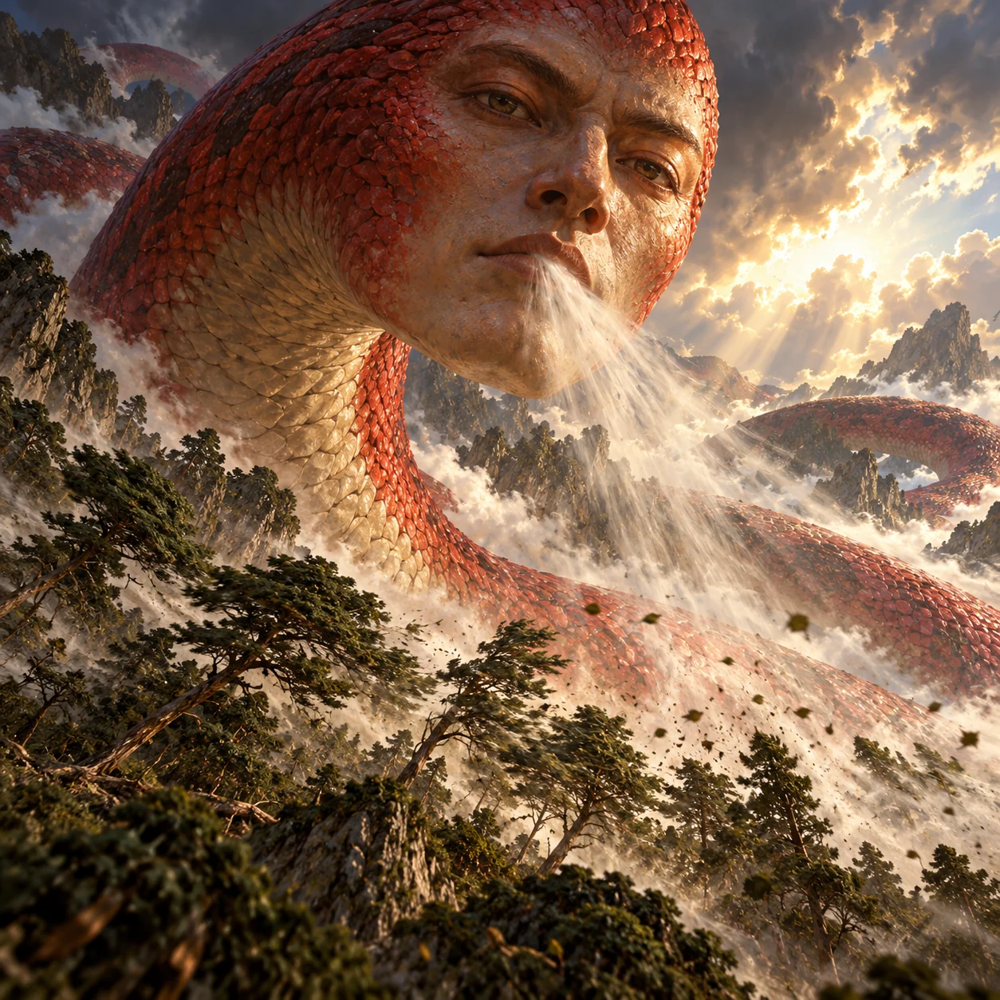
Zhuyin dari Shanhaijing: wajah manusia, tubuh ular merah seribu li, berdiam di kaki Gunung Zhong; mata membuka siang dan napas menjadi angin.
Aura: Keagungan datang dari tubuh seribu li dan siang serta angin yang bergerak bersama tatapan dan napas Zhuyin (zhulong-mythology-c07, zhulong-mythology-c08).
Audit ciri dan sumber
- [object Object]
- [object Object]
- [object Object]
Native dan 200px diperiksa: satu wajah manusia dengan dua mata, tubuh ular merah tanpa kaki/lengan/sayap/tanduk, skala menutupi pegunungan. Hembusan menggerakkan pohon/debu dan cahaya siang sesuai zhulong-mythology-c07; aksi dominan dan agung, bukan pose atau aura neon. Tidak ada tulisan/gore/anatomi tambahan.
Review sumberONE original square premium painterly cinematic Mythics illustration of ZHUYIN / ZHULONG, the red human-faced serpent god of Mount Zhong in the Shanhaijing.
ANATOMY: exactly ONE HUMAN FACE with TWO human eyes, NO serpentine animal head; an immense RED SNAKE BODY a thousand li long extends and coils across mountains; absolutely NO ARMS, LEGS, WINGS, HORNS, beard tendrils or accessories. The human face seamlessly joins the snake neck, not a human torso. [zhulong-mythology-c07,c08]
MOMENT: the colossal face leans forward and opens both eyes toward the viewer, exhaling a powerful wind that bends whole forests beneath his face.
POWER: opening his eyes makes DAY, breath becomes WIND; daylight breaks across formerly dark mountain slopes while trees bend, loose earth and clouds are driven away physically. NO eyebeams, glowing pupils or magic rings. [zhulong-mythology-c07]
SCALE & CAMERA: extreme low angle from tiny mountain trees; huge human face and red serpent neck fill most of the square, long coils eclipse the distant ridges.
LIGHT & WEATHER: one warm shaft of new daylight breaking darkness, deep walnut shadow, wind-driven dust and cloud.
SURFACE: weathered solemn human features, richly textured dark red scales and rough mountain stone.
SETTING: foot of Mount Zhong, immense mountain country. [zhulong-mythology-c08]
MOOD: divine authority, reverent and overwhelming, awake and actively controlling the world, never evil caricature or ordinary man.
HARD CONSTRAINTS: square at least1024px; no text, lettering, glyphs, inscriptions, logo, border, frame or watermark; no extra heads, limbs or fingers; no design borrowed from films, games, anime or comics; no nudity, exposed breasts or explicit gore; no generic glow aura, neon outlines, floating runes or energy ribbons.
Aigamuxa
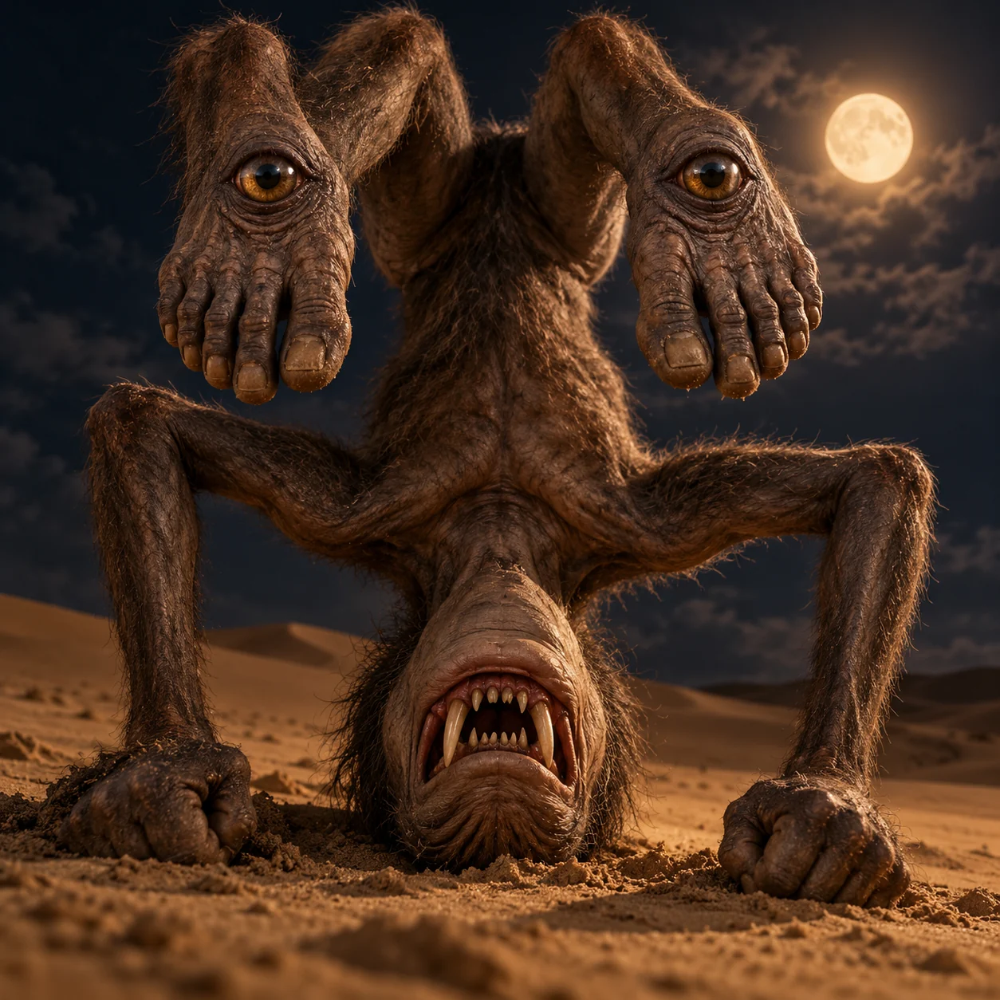
Aigamuxa kurus besar menyerupai kera, dengan gigi sepanjang jari dan mata di punggung kaki, berdiri terbalik untuk melihat pemburuannya.
Aura: Ancaman dari mata kaki yang melihat saat tubuh terbalik serta gigi sepanjang jari untuk memburu manusia (aigamuxa-c04, aigamuxa-c13, aigamuxa-c14, aigamuxa-c03).
Audit ciri dan sumber
- [object Object]
- [object Object]
- [object Object]
Native dan 200px diperiksa: mata hanya pada punggung kedua kaki, lima jari kaki per kaki, wajah tanpa mata, dua lengan dan dua kaki terhubung jelas. Headstand/dua kepalan penopang sesuai aigamuxa-c04, gigi panjang c14, malam gurun c03/c10. Kesan berbahaya kuat pada 200px; tanpa efek magis, teks atau gore.
Review sumberONE original square premium painterly cinematic Mythics illustration of AIGAMUXA, the thin ape-like Khoikhoi desert man-eater whose EYES ARE ON THE TOPS OF ITS FEET, not its face.
ANATOMY: ONE long thin ape-like body, ONE head, TWO arms and TWO legs, finger-long fangs. THE HEAD HAS NO EYES AND NO EYE SOCKETS: seamless eyeless brow, nose and huge mouth only. Exactly ONE natural eye on the DORSAL TOP of EACH FOOT, two eyes total, both foot-eyes large and unmistakably visible looking toward camera. No eyes on soles or knees. [aigamuxa-c09,c13,c14]
MOMENT: balancing UPSIDE DOWN on the crown of its head in sand with two clenched hands bracing the ground, it curls both long legs overhead forward so the TOP surfaces of both feet face the viewer. The two FOOT EYES stare down at us; the eyeless inverted mouth opens in a threatening grimace. No hands displayed open. [aigamuxa-c04]
POWER: no added magic; foot-eyes let it see its human prey while inverted. It lurks behind desert dunes by night. [aigamuxa-c03,c10]
SCALE & CAMERA: low-angle tight confrontational view, inverted creature fills the square; both eye-bearing feet prominently in upper foreground, inverted eyeless head and long teeth below, body physically connected clearly.
LIGHT & WEATHER: single low warm moon rim, dark walnut shadows, fine sand disturbed by head and fists.
SURFACE: sparse coarse brown fur, dry weathered skin, bony long limbs and sharp ivory teeth.
SETTING: desert sand dune at night. [aigamuxa-c03,c10]
MOOD: uncanny ferocious man-eater, dangerous and imposing, never playful acrobat or cute animal.
HARD CONSTRAINTS: square at least1024px; no text, lettering, glyphs, inscriptions, logo, border, frame or watermark; no extra heads, limbs or fingers; no design borrowed from films, games, anime or comics; no nudity, exposed breasts or explicit gore; no generic glow aura, neon outlines, floating runes or energy ribbons.
Alan
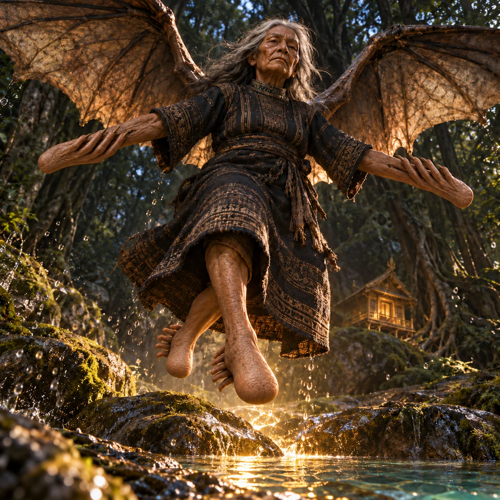
Alan ukuran manusia: roh perempuan tua bersayap, wajah berkerut keras, lengan panjang dan jari tangan/kaki mengarah ke belakang.
Aura: Keagungan roh ibu asuh berasal dari turunnya tubuh bersayap dengan jari berbalik dan wajah keras, bukan sifat kanibal aran (alan-legendary-creature-c03, alan-legendary-creature-c22, alan-legendary-creature-c04).
Audit ciri dan sumber
- [object Object]
- [object Object]
- [object Object]
Native dan 200px diperiksa setelah targeted edit03. Jari kedua tangan mengarah kembali dari pergelangan menuju siku; kedua kaki kini memiliki ujung depan tumit opak tumpul tanpa jari tambahan, lima jari hanya menonjol di belakang. Dua sayap, dua lengan, dua kaki dan wajah tua mengikuti alan-legendary-creature-c03/c22; turun aktif di hutan/mata air, pakaian opak, sikap ibu asuh agung bukan aran kanibal. Dua kegagalan anatomi nyata diarsipkan.
Review sumberEDIT ONLY the FRONT ENDS of the TWO FEET in attached image. Preserve ALL hands (backward-facing fingers), rear-facing toe clusters, wings, body, face, pose, clothes and background unchanged.
Each foot already has FIVE REAR TOES behind the ankle; KEEP those rear toe clusters exactly. But the FRONT END of each foot closest to camera still has four rounded ordinary TOE BUMPS / toe grooves. REMOVE ALL these front toe bumps and grooves. Replace each entire front foot tip with ONE smooth rounded uninterrupted HEEL PAD, like the back of a normal human heel: a single solid rounded oval of skin with NO digits, NO toe segmentation, NO toenails and NO scalloped edge. Smooth unsegmented heel-shaped ends only at the front, five digits only at the rear. This is required reverse anatomy of Alan.
Do not add toes anywhere; do not change hands, rear toes or anything else. Natural skin texture, no gore, no text/watermark.
Amarok
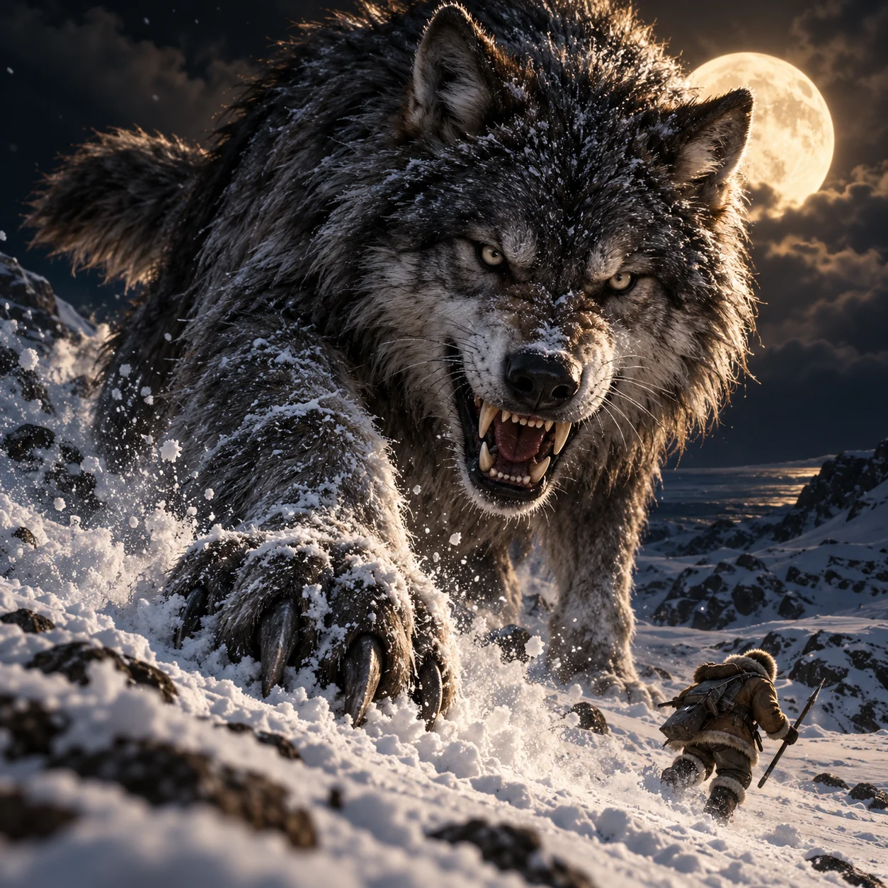
Amarok sebagai serigala raksasa tunggal yang memburu pelintas/pemburu malam.
Aura: Bahaya dari skala serigala raksasa dan perburuan tunggal malam (amarok-c01, amarok-c09), tanpa kekuatan Waheela yang tidak dijadikan basis.
Audit ciri dan sumber
- [object Object]
- [object Object]
- [object Object]
Native dan 200px diperiksa: satu serigala raksasa, dua mata, dua forelegs jelas dan hindlegs tertutup tubuh secara wajar, satu ekor; pemburu kecil memberi bukti skala. Paw mendarat/salju bergerak sesuai perburuan amarok-c01/c09, tanpa glow/tanduk/gore/teks.
Review sumberONE original square premium painterly cinematic Mythics illustration of AMAROK, the gigantic solitary wolf of Inuit tradition that stalks lone hunters by night.
ANATOMY: exactly ONE GIANT WOLF, ONE head TWO natural eyes FOUR legs ONE tail; realistic wolf anatomy, immense coarse gray-black winter fur and visible wolf teeth, no horns or antlers. [amarok-c01]
MOMENT: bursting from a dark snow ridge straight toward the viewer, one enormous forepaw crashes down into foreground snow, mouth open in a fierce hunting snarl, gaze fixed toward us; a tiny solitary fully clothed hunter retreats far below for clear scale, no injury.
POWER: documented giant solitary predator, stalking people foolish enough to hunt alone after dark; physical hunt and snow displaced by paws only, no magical beams or glow. [amarok-c01,c09]
SCALE & CAMERA: extreme low angle beside its landing paw, huge head and shoulders loom and fill the square, hunter barely knee-high relative to paw, definitely NOT an ordinary wolf.
LIGHT & WEATHER: one low warm moon edge lighting heavy fur; deep walnut-black night and windblown snow.
SURFACE: tangled damp coarse fur, frosted whiskers, massive rough claws, churned snow.
SETTING: editorial Arctic snow wilderness at night consistent with Inuit context. [amarok-c01]
MOOD: overwhelming danger, imminent contact, massive solitary hunter, never pet, cute or calm.
HARD CONSTRAINTS: square at least1024px; no text, lettering, glyphs, inscriptions, logo, border, frame or watermark; no extra heads, limbs or fingers; no design borrowed from films, games, anime or comics; no nudity, exposed breasts or explicit gore; no generic glow aura, neon outlines, floating runes or energy ribbons.
Andrealphus
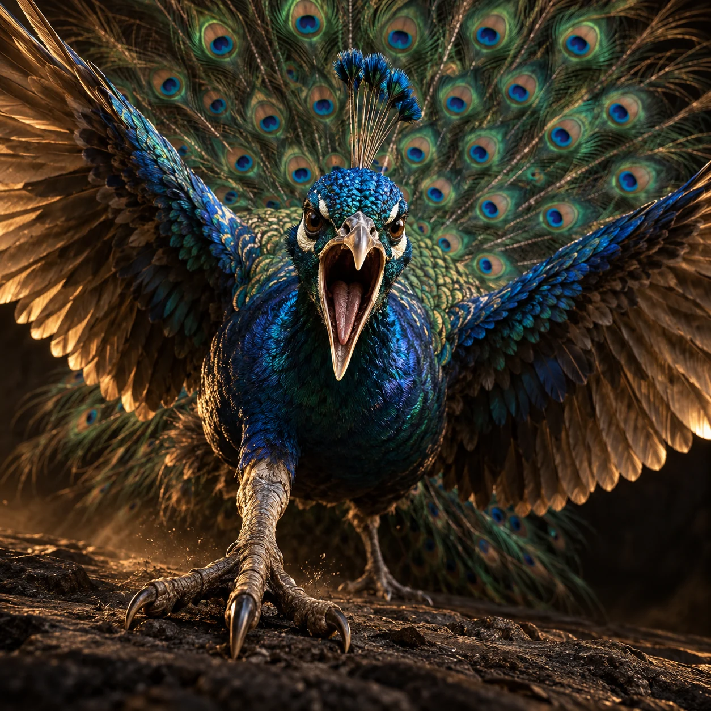
Andrealphus pada kemunculan awal sebagai merak yang membuat suara keras, menurut Goetia.
Aura: Ancaman marquis iblis datang dari merak yang muncul dengan suara keras dan konfrontasi jarak dekat (andrealphus-c09, andrealphus-c12).
Audit ciri dan sumber
- [object Object]
- [object Object]
Native dan 200px diperiksa: merak berparuh terbuka menjerit, dua sayap maju, dua kaki dan pola eyespot bulu normal. Konfrontasi close-up dan langkah aktif jelas, tanpa sonic rings/glyph/cowherd modern. Ancaman dari kemunculan bersuara keras andrealphus-c09/c12, tidak tampak burung pasif.
Review sumberONE original square premium painterly cinematic Mythics illustration of ANDREALPHUS, the mighty marquis spirit first appearing as a PEACOCK with great harsh noises in the Goetia.
ANATOMY: exactly ONE PEACOCK with ONE bird head, TWO natural eyes, TWO wings, TWO bird legs and ONE spectacular natural peacock tail fan; realistic crest and beak, NO human body or demon horns. Natural feather eyespots only, never actual eyeballs. [andrealphus-c09,c12]
MOMENT: suddenly surging forward toward the viewer with both wings thrust wide, throat stretched and sharp beak OPEN in a harsh SCREAM, glaring directly at us; one clawed bird foot plants firmly toward foreground. Proud aggressive confrontation, not a quiet perched zoo bird.
POWER: great harsh noises accompany this appearance; show the active open screaming beak and tense throat, no visible sonic rings, no floating geometric symbols, no invented elemental powers. [andrealphus-c09,c12]
SCALE & CAMERA: extremely low camera very close under beak and front claw; head, threatening wings and dark huge-in-frame tail dominate square through perspective, actual bird size unchanged.
LIGHT & WEATHER: one warm low rim light against near-black walnut shadow, a few ordinary dust particles stirred by the foot.
SURFACE: detailed rough layered feathers, deep antique blue-green iridescence, sharp horn-colored beak and talons.
SETTING: neutral dark stone foreground dissolving into black, editorial nonhistorical setting with no inscriptions.
MOOD: intimidating supernatural marquis in its sourced bird form, imposing, never ornamental mascot, pet or placid bird portrait.
HARD CONSTRAINTS: square at least1024px; no text, lettering, glyphs, inscriptions, logo, border, frame or watermark; no extra heads, limbs or fingers; no design borrowed from films, games, anime or comics; no nudity, exposed breasts or explicit gore; no generic glow aura, neon outlines, floating runes or energy ribbons.
Azumi-no-isora
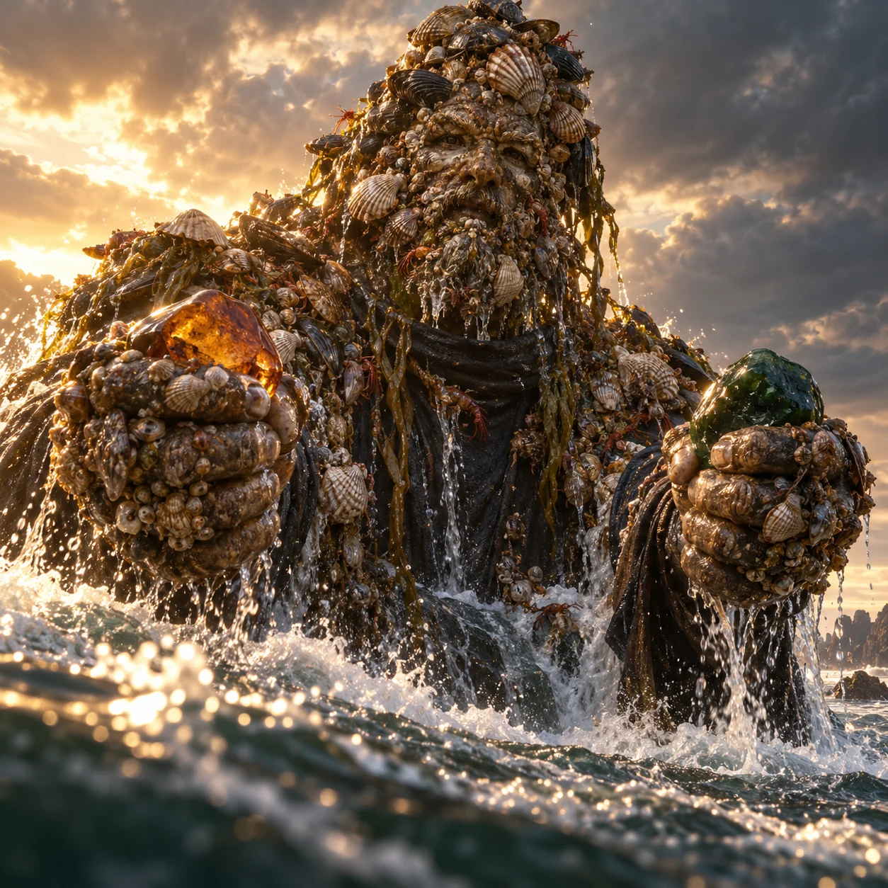
Azumi-no-Isora dalam Taiheiki: messenger dari dasar laut, tubuh terselubung kerang, clam dan serangga rumput laut, membawa dua permata pasang-surut.
Aura: Keagungan messenger Shinto datang dari kemunculan tubuh berkerang dari laut dan dua permata pasang-surut (azumi-no-isora-c13, azumi-no-isora-c14, azumi-no-isora-c15), tanpa mengarang kendali gelombang.
Audit ciri dan sumber
- [object Object]
- [object Object]
- [object Object]
Native dan 200px diperiksa: kepala tunggal bermata dua, tubuh penuh shellfish/clams dan serangga laut sehingga bukan orang biasa, dua tangan berkepalan dengan dua permata nonluminous. Kemunculan/cipratan fisik laut dan presentasi permata sesuai azumi-no-isora-c13/c14/c15; tanpa klaim tide-control tambahan, mask dance, glyph, gore atau anatomi ekstra. Keagungan reverent kuat.
Review sumberONE original square premium painterly cinematic Mythics illustration of AZUMI-NO-ISORA as recorded in the TAIHEIKI, the Shinto sea-floor deity returning as messenger with TWO tide jewels.
ANATOMY: ONE venerable head, TWO arms TWO legs, entire body and face densely encrusted with shellfish, clams and tiny seaweed-dwelling insects so he hardly looks human at all. Opaque dark high-neck robe covers chest and pelvis beneath shells. TWO natural eyes glimpsed between shell clusters, no horns, wings or added mouths. Exactly TWO jewels: one amber stone gripped by one closed hand and one dark green stone in the other closed hand, fingers naturally curled and occluded. [azumi-no-isora-c14,c15]
MOMENT: rising out of seawater and advancing toward the viewer to PRESENT the two nonluminous jewels obtained from the dragon palace; cascades drain from his shell-covered shoulders, authoritative sacred messenger, not a zombie. [azumi-no-isora-c13,c14,c15]
POWER: seawater splashes only from his physical arrival from sea floor. No invented tide-controlling effect, no glowing jewel beams. The two gems are borrowed ebb and flood jewels. [azumi-no-isora-c13,c15]
SCALE & CAMERA: extreme low close angle at water surface; huge-in-frame shell-covered face and two gem-bearing clenched hands dominate, actual body scale unspecified.
LIGHT & WEATHER: one low warm sun shaft cutting deep walnut storm shadows, spray and flowing water catch the rim.
SURFACE: heavy wet shells, ridged clams, dark coarse cloth, small crustacean-like seaweed insects; realistic marine encrustation, no gore.
SETTING: sea margin editorial transition from the sea floor to gods' meeting-ground. [azumi-no-isora-c13,c14]
MOOD: sacred, reverent, imposing and awe-inspiring, not evil monster, ordinary fisherman or shell statue.
HARD CONSTRAINTS: square at least1024px; no text, lettering, glyphs, inscriptions, logo, border, frame or watermark; no extra heads, limbs or fingers; no design borrowed from films, games, anime or comics; no nudity, exposed breasts or explicit gore; no generic glow aura, neon outlines, floating runes or energy ribbons.
Bajang
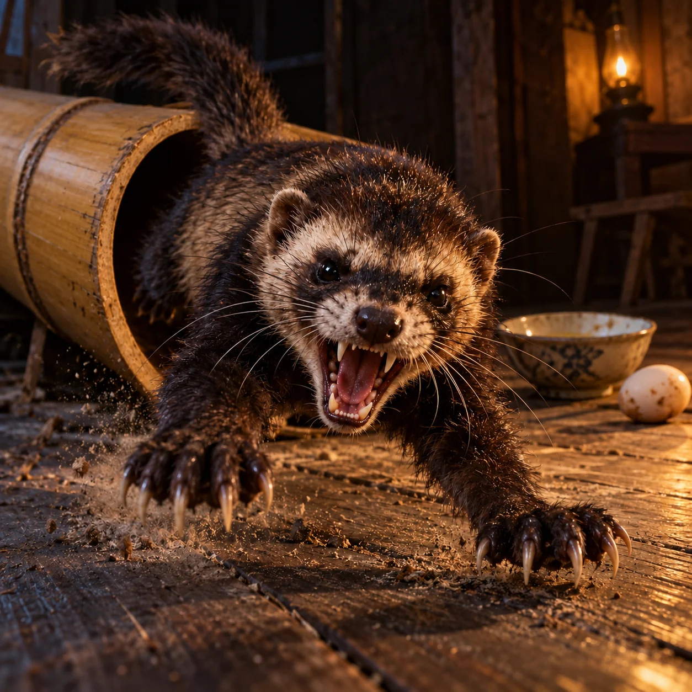
Bajang sebagai pole-cat familiar yang muncul dari tabung bambu dan menerjang karena diabaikan tuannya.
Aura: Ancaman familiar datang dari pole-cat yang mengganggu rumah dan dapat menyerang tuannya jika diabaikan (bajang-c04, bajang-c09, bajang-c07).
Audit ciri dan sumber
- [object Object]
- [object Object]
- [object Object]
Native dan 200px diperiksa setelah edit02 container. Pole-cat menerjang dengan satu kepala, dua mata natural, empat kaki secara occlusion wajar, ekor tunggal dan anatomi paw wajar. Container kini batang bambu solid berongga, bukan anyaman. Snarl/aksi rumah dari bajang-c04/c09, tabung c03, tanpa ghostfire/gore/glyph; sifat maligna bersumber c07 dan tidak cute.
Review sumberEDIT ONLY the bamboo storage CONTAINER behind the attacking pole-cat in attached Bajang illustration. Preserve animal anatomy, fur, snarl, paws, tail, pose, lamp, floor, egg, bowl, dust and all lighting unchanged.
The current container looks like a WOVEN BASKET cylinder. Replace it with ONE HOLLOW NATURAL BAMBOO STEM TUBE, cut open at the near end: solid continuous smooth yellow-brown bamboo wall with longitudinal grain, one natural raised bamboo NODE RING farther back, thick circular cut rim and black hollow cavity. NO WOVEN STRIPS, NO lattice, NO crosshatching, NO basket construction. It lies in the same location and scale as the current container, behind the pole-cat. Preserve empty opening and original composition. No markings, glyphs, lettering or added objects. Everything else exactly unchanged.
black dragon
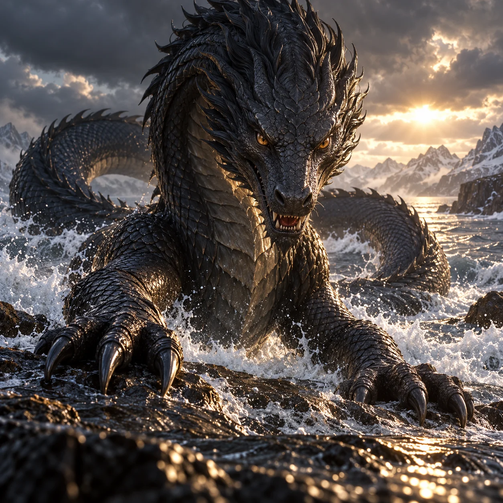
Naga timur bersisik hitam dengan tepat dua kaki depan sebagai penjaga utara yang diasosiasikan dengan air.
Aura: Keagungan penjaga utara hadir melalui naga bersisik hitam, dua forelegs yang maju dan kemunculan air (black-dragon-c04, black-dragon-c02, black-dragon-c03).
Audit ciri dan sumber
- [object Object]
- [object Object]
- [object Object]
Native dan 200px diperiksa: satu kepala, dua mata, tepat dua forelegs dengan tiga cakar masing-masing jelas, tubuh panjang bersisik hitam tanpa hindlegs/sayap/pasangan tanduk. Sisik menonjol pada leher adalah rendering editorial, bukan atribut kuasa. Kedua kaki menyentuh batu/air bergerak dari kemunculan; frame dominan sesuai guardian black-dragon-c02/c03/c04. Tidak ada fire/water-control, teks, glow atau gore.
Review sumberONE original square premium painterly cinematic Mythics illustration of the BLACK DRAGON, an eastern black-scaled sacred guardian of the north associated with water.
ANATOMY: ONE imposing hornless eastern dragon head with TWO natural amber eyes, elongated sinuous black-scaled body, EXACTLY TWO FORELEGS near its chest, each bearing THREE clearly separated claws. Long remaining serpent body coils behind; absolutely NO HIND LEGS, WINGS, HORNS, extra heads, whisker tendrils or human parts. [black-dragon-c04]
MOMENT: surging up out of dark water toward us, both forelegs reaching forward onto wet shore rocks, chest and head loom above its two claws; alert direct commanding gaze, jaws slightly open showing natural teeth. Active guardian, never lifeless statue.
POWER: association with water and sacred guarding the north; water splashes because its body physically emerges, not because of invented control power. No fire, laser, magic wave rings or generic aura. [black-dragon-c02,c03]
SCALE & CAMERA: extremely low water-surface camera close beneath the head and two foreclaws; head, scales and forelegs fill most of square, no human scale comparison or unsupported cosmic size.
LIGHT & WEATHER: one warm low sun shaft through dark northern cloud, rim on slick black scales and spray, deep walnut shadows.
SURFACE: rough wet ebony scales, coarse three-clawed feet, weathered shore rock and dark water.
SETTING: editorial northern waters reflecting sourced association with water and north. [black-dragon-c02]
MOOD: sacred imposing protective authority, overwhelming and reverent, not cute, ordinary animal or evil caricature.
HARD CONSTRAINTS: square at least1024px; no text, lettering, glyphs, inscriptions, logo, border, frame or watermark; no extra heads, limbs or fingers; no design borrowed from films, games, anime or comics; no nudity, exposed breasts or explicit gore; no generic glow aura, neon outlines, floating runes or energy ribbons.
Cabraboc
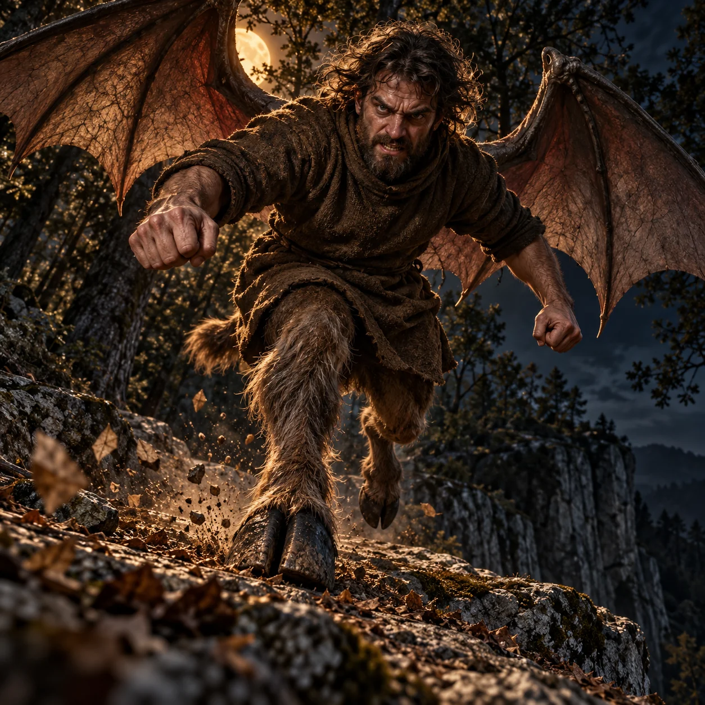
Cabraboc varian hutan bersayap kelelawar: bagian atas manusia berpakaian dan bagian bawah kambing, mengejar pelintas malam di tebing.
Aura: Bahaya berasal dari sosok campuran manusia/kambing bersayap yang memburu pelintas hutan malam ke tebing (cabraboc-c01, cabraboc-c02, cabraboc-c03).
Audit ciri dan sumber
- [object Object]
- [object Object]
- [object Object]
Native dan 200px diperiksa: bagian atas manusia, dua mata, dua lengan berkepalan, dua goat legs dengan hoof belah jelas dan dua bat wings, satu ekor pendek. Torso/pelvis berpakaian opak; tanpa goat head/tanduk tambahan. Charging di forest cliff malam sesuai cabraboc-c01/c02/c03, debris dari hoof fisik; ancaman kuat dan bukan carnival mascot.
Review sumberONE original square premium painterly cinematic Mythics illustration of CABRABOC, the Catalan forest pursuer HALF HUMAN ABOVE and HALF GOAT BELOW, using the documented BAT-WINGED variant.
ANATOMY: exactly ONE HUMAN adult male head with TWO natural eyes, human upper torso and TWO human arms, lower body furred like a goat with exactly TWO goat legs ending in split CLOVEN HOOVES, ONE short goat tail, TWO large bat membrane wings. NO goat head or horns on the human head. Fully opaque high-neck rough brown tunic covers shoulders, chest and pelvis. Both hands clenched in closed natural fists. [cabraboc-c01,c03]
MOMENT: charging out of black forest toward the viewer at a cliff edge, front cloven hoof slams onto foreground rock while the other goat leg pushes off, two wings flaring, clenched fists drive forward and face glares at us. We occupy the fleeing traveller's position. [cabraboc-c02,c03]
POWER: physical pursuit of night travellers that can drive them over a cliff; no magical fire, generic aura or attack beams, no falling/injured person shown. [cabraboc-c02,c03]
SCALE & CAMERA: extreme low close angle on the ledge below its charging hoof; human face, goat legs and bat wings all readable and fill square; no unsupported giant size.
LIGHT & WEATHER: one low warm moon edge light through trees, deep walnut shadows, leaf litter and rock dust kicked by hooves.
SURFACE: coarse goat fur, rough cracked cloven hooves, heavy dark cloth, leathery veined bat wings and worn cliff stone.
SETTING: forest cliff in Catalan night traveller legend. [cabraboc-c02,c03]
MOOD: imminent pursuit, alarming uncanny hybrid, imposing and dangerous, never carnival mascot or ordinary man.
HARD CONSTRAINTS: square at least1024px; no text, lettering, glyphs, inscriptions, logo, border, frame or watermark; no extra heads, limbs or fingers; no design borrowed from films, games, anime or comics; no nudity, exposed breasts or explicit gore; no generic glow aura, neon outlines, floating runes or energy ribbons.
Camahueto
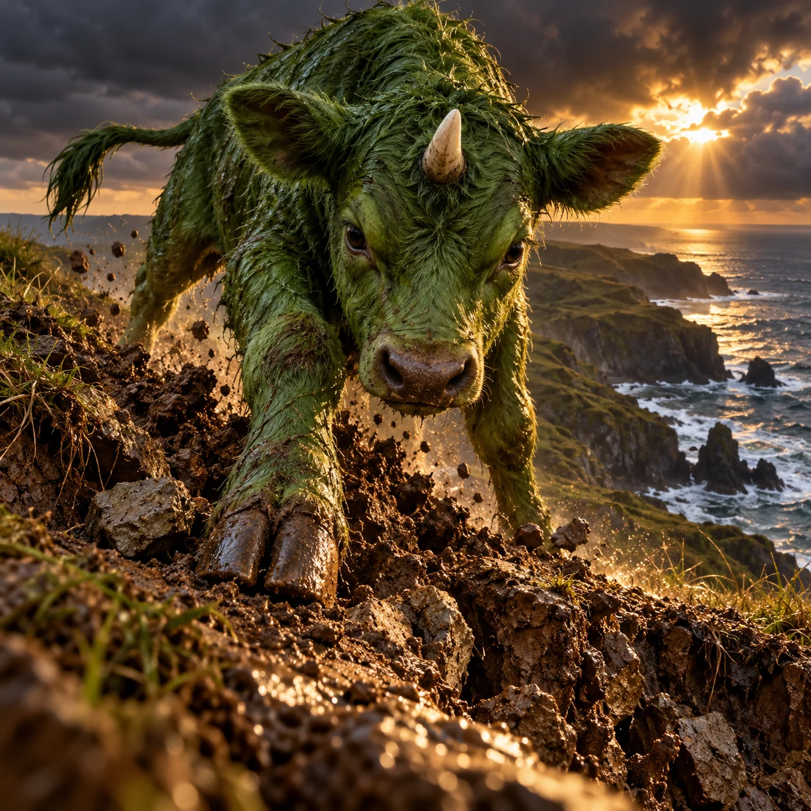
Camahueto Chiloé Mitológico sebagai anak sapi hijau dengan satu tanduk kecil, muncul dari bumi di bukit dekat laut.
Aura: Kekuatan destruktif datang dari kemunculan anak sapi hijau bertanduk tunggal dari bukit laut serta longsor dalam tafsir sumber (camahueto-c07, camahueto-c08, camahueto-c12, camahueto-c15), tanpa membesarkan calf atau mengarang kuasa waktu.
Audit ciri dan sumber
- [object Object]
- [object Object]
- [object Object]
Native dan 200px diperiksa: calf berwarna hijau, satu tanduk pendek tengah dahi, dua mata, empat kaki dengan occlusion wajar, ekor tunggal, hoof belah. Melangkah keluar tanah yang runtuh pada coastalhill, bukan animal diam; sumber camahueto-c07/c08/c12/c14/c15. Longsor merupakan visualisasi interpretasi c12, tanpa rain/time power, tanduk lateral, glow, tulisan atau gore.
Review sumberONE original square premium painterly cinematic Mythics illustration of CAMAHUETO in the CHILOÉ MITOLÓGICO variant: a GREEN CALF with ONE SMALL forehead horn, born from the earth on a hill beside the sea.
ANATOMY: exactly ONE young CALF, ONE bovine head TWO natural eyes FOUR bovine legs ONE tail, unmistakably GREEN coarse wet fur. ONE SHORT SMALL IVORY HORN centered on its FOREHEAD, clearly readable but modest, no two lateral cow horns and no giant unicorn spear. Realistic calf face and split hooves; young lean calf body, not adult bull. [camahueto-c07]
MOMENT: bursting UP and FORWARD from a split in the wet earth toward the viewer, forehead lowered confrontationally, one cloven front hoof drives into the near cliff ledge while dirt slides away under it; firm intense eyes and flared nostrils, not cute. Its newborn emergence physically displaces mud and stones. [camahueto-c08]
POWER: source says it is born from earth and describes destructive presence on land; crumbling coastal hillside visualizes the author's interpretation of spontaneous landslides, NOT an invented earthquake spell. No magical rain/thunder/time-control effect. [camahueto-c08,c12,c15]
SCALE & CAMERA: extreme ground-level close angle beneath horn and landing hoof; green head, SHORT single horn and calf shoulders dominate square through perspective, actual calf size unchanged, NOT colossal.
LIGHT & WEATHER: one warm low sun shaft through deep walnut-dark clouds, wet-earth rim light and flying mud.
SURFACE: rough green wet hair, crusted earthy muzzle, small smooth ivory horn, muddy cloven hooves, split earth and rock.
SETTING: high coastal hill beside the dark sea of Chiloé, sea belongs to it. [camahueto-c08,c14]
MOOD: strange destructive force of the land, imposing and active, not ordinary dairy calf, pet or mascot.
HARD CONSTRAINTS: square at least1024px; no text, lettering, glyphs, inscriptions, logo, border, frame or watermark; no extra heads, limbs or fingers; no design borrowed from films, games, anime or comics; no nudity, exposed breasts or explicit gore; no generic glow aura, neon outlines, floating runes or energy ribbons.
Carbuncle (legendary creature)
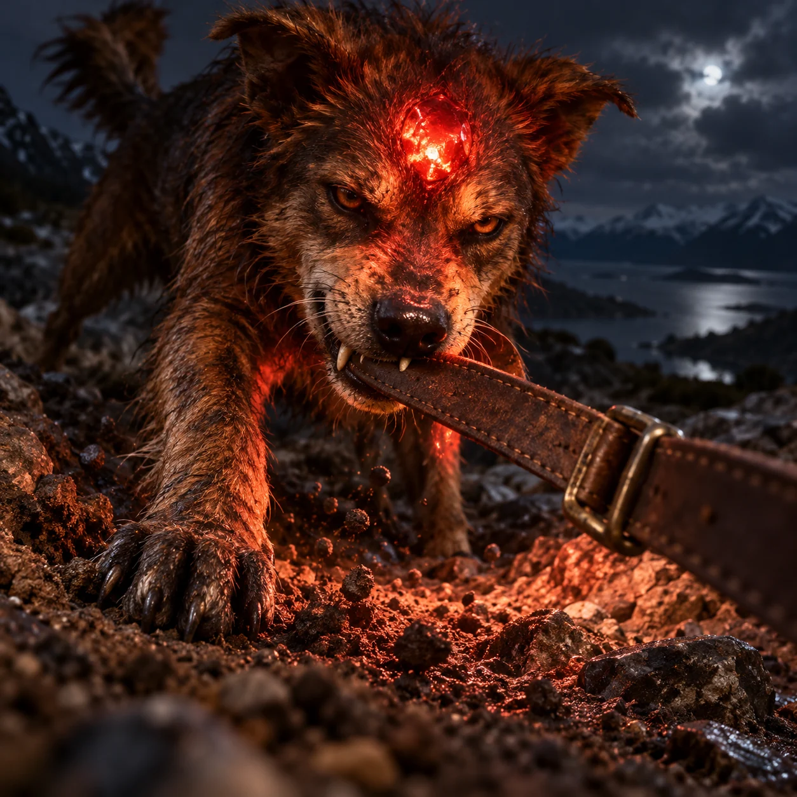
Carbunclo, the small ADULT luminous dog guardian of metals with the traditional red shining head mirror
Aura: SNATCH the plain leather belt and wrench it toward darkness, mature dog lips drawn back around belt in fierce protective tension, narrowed eyes lock onto viewer, one front paw braced directly before ground camera; earth scatters from abrupt turn. Grounded in carbuncle-legendary-creature-c01, carbuncle-legendary-creature-c02, carbuncle-legendary-creature-c06, carbuncle-legendary-creature-c08, carbuncle-legendary-creature-c07, carbuncle-legendary-creature-c09
Audit ciri dan sumber
- [object Object]
- [object Object]
- [object Object]
Native1254 and200px inspected: SMALL mature lean canine with fierce protective belt-snatch, narrowed eyes/normalteeth,4paws/1tail/2ears, red physical headmirror c02 and sourced luminosity c06 lighting closeearth. Beltwidth preserves smallscale; no puppy or gamehybrid. All7Sangar checks pass. OldrejectedPNG/fullreceipt archived.
Review sumberONE original square premium painterly cinematic Mythics illustration of Carbunclo, the small ADULT luminous dog guardian of metals with the traditional red shining head mirror.
ANATOMY: ONE SMALL ADULT DOG, long lean mature muzzle, small severely narrowed eyes, coarse weathered dark brown fur, ONE head/TWO eyes/TWO natural ears/FOUR paws/ONE tail. One physical irregular RED reflective stone-like mirror on forehead, like a glowing coal, NOT a jewelcrown. Normal canine teeth, NO oversized fangs. NO puppy proportions, huge round eyes, fox/cat/rabbit/squirrel mixture, shells, antlers or wings. [carbuncle-legendary-creature-c01, carbuncle-legendary-creature-c02, carbuncle-legendary-creature-c06]
MOMENT: SNATCH the plain leather belt and wrench it toward darkness, mature dog lips drawn back around belt in fierce protective tension, narrowed eyes lock onto viewer, one front paw braced directly before ground camera; earth scatters from abrupt turn.
POWER: Documented small dog luminosity and red shining head mirror illuminate the muzzle, belt and adjacent earth locally; visible light has its physical source at the red mirror/body, no detached aura or flames. Snatches a thrown personal belt as in ritual c08. [carbuncle-legendary-creature-c02, carbuncle-legendary-creature-c06, carbuncle-legendary-creature-c08]
SCALE & CAMERA: Extreme low MACRO CLOSE-UP at the size of a smalldog: mature face and red head mirror fill mostof upperframe, dog action dominates square. Belt width demonstrates SMALL scale, not giganticdog.
LIGHT & WEATHER: The red shining head mirror is dominant physical light, deep walnut shadows, restrained natural body luminosity. Night air, grit; no neon furoutline.
SURFACE: Coarse tangled muddy mature fur, wet blacknose, blunt worn canine teeth, rough leather, raw red reflective mineral and damp earth.
SETTING: Southern Chile treasure-pit edge on winter-solstice night; unmarked rocks and plain belt. [carbuncle-legendary-creature-c06, carbuncle-legendary-creature-c07, carbuncle-legendary-creature-c08, carbuncle-legendary-creature-c09]
MOOD: Unnerving and imposing active supernatural encounter; never cute, tame, calm or decorative. Creature remains recognizable at200px.
HARD CONSTRAINTS: ONE square native PNG minimum1024x1024; no text, lettering, logo, watermark, border or frame; no invented anatomy, extra heads, limbs, fingers or eyes; no game/film/anime/comic design, no nudity or gore. No generic halo, neon outline, runes, energy ribbons or unclaimed powers. Respect the living tradition.
Crinisus
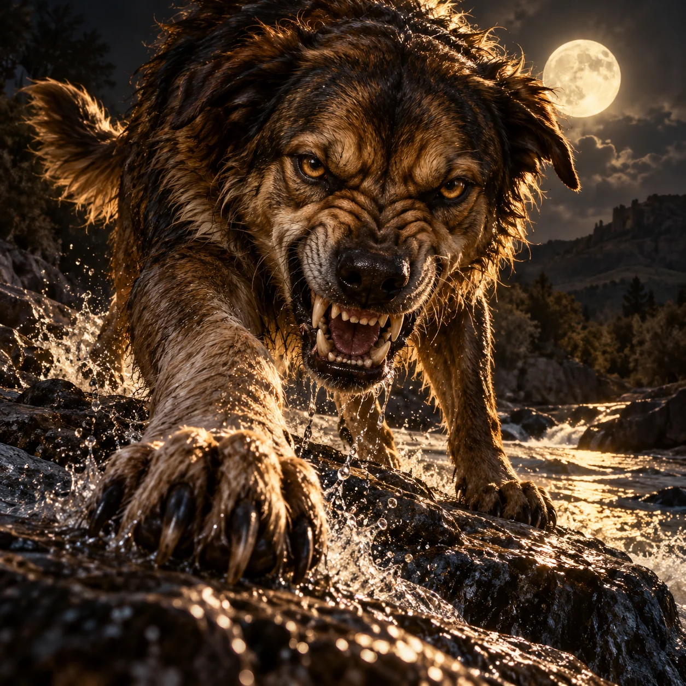
Dog manifestation c02/c04; river setting c01/c05. Editorial confrontation reverent, no seduction scene or invented river-control.
Aura: Kesan aktif berasal dari Advance over a jagged river boulder toward the low camera, head lowered and jaws open, near paw thrust forward, confrontational sacred presence (crinisus-c02, crinisus-c04).
Audit ciri dan sumber
- [object Object]
- [object Object]
- [object Object]
Native dan 200px dilihat, Uji Sangar7/7. True snarling muzzle, narrow focused gaze dan paw foreshortening kini confrontational; satu natural dog tanpa horn/glow/control river. Spray hanya paw contact. Dua forepaws tampak, belakang occluded, satu tail. Attempt01 ordinary friendly panting dog di rejected.
Review sumberONE original square premium painterly cinematic Mythics illustration of Crinisus, the god of the Sicilian river manifested in the shape of a dog.
ANATOMY: One dog head, two eyes, two ears, four canine legs, one tail; natural canine anatomy only, no horns or additional humanoid parts [crinisus-c02,crinisus-c04]
MOMENT: Advance over a jagged river boulder toward the low camera, head lowered and jaws open, near paw thrust forward, confrontational sacred presence.
POWER: No documented power; majesty through dog anatomy, intense gaze, framing and light only; ordinary river spray beneath stepping paw, no controlled wave or magical glow [crinisus-c02]
SCALE & CAMERA: extreme low angle, close foreshortening, subject dominates square and identifying anatomy reads at200px; no invented giant scale unless documented.
LIGHT & WEATHER: one dominant moon source, deep warm walnut shadows, antique gold rim highlights, wet air and ordinary physical spray or grit appropriate to action.
SURFACE: tactile organic texture appropriate to anatomy, rough fur/feather/scales/cloth, wet stone, never plastic or statue.
SETTING: River Krimisos in north-western Sicily near Egesta, dark bank and water running to Mediterranean coast [crinisus-c01,crinisus-c05]
MOOD: dangerous imposing active moment, or reverent overwhelming majesty for sacred beings; never cute, calm, decorative or an ordinary animal/person.
HARD CONSTRAINTS: no text, glyphs, lettering, logo, border, watermark; no extra heads, eyes, limbs or fingers; no borrowed film/game/anime/comic design; no nudity or explicit gore; no generic glow aura, neon outline, energy ribbons or floating runes. One square PNG at least1024x1024.
TARGETED CORRECTION: The previous ordinary friendly panting dog failed. Make this divine dog aggressively confrontational: tightly wrinkled muzzle, lips drawn back baring incisors and long canines in a true snarl, narrowed piercing eyes glaring down at viewer, ears flattened, bristling neck fur; jaws tense rather than smiling/panting. Very close head and enormous foreshortened stepping paw occupy nearly whole frame; dangerous divine presence by composition alone, NO invented giant size or horns or magic. Preserve natural dog anatomy, one tail and four paws.
Cuca
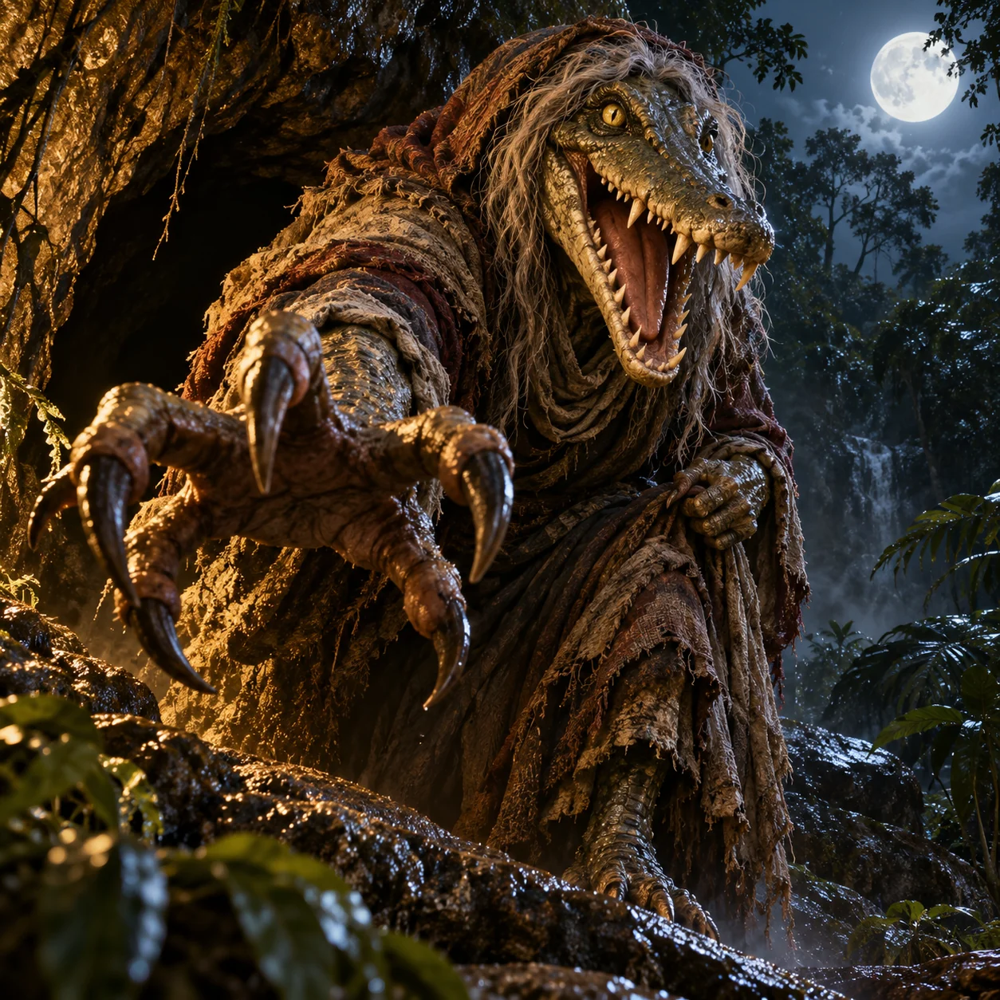
Brazilian alligator-headed witch c08 with Lobato's textual finger claws/cave c11/c12; original costume, no television design.
Aura: Kesan aktif berasal dari Lunge out of a forest cave toward the low camera with one clawed hand reaching and alligator mouth open, the other hand clutching robe; no child shown (cuca-c02, cuca-c08, cuca-c12).
Audit ciri dan sumber
- [object Object]
- [object Object]
- [object Object]
Native dan 200px dilihat. Uji Sangar 7/7: kepala alligator, jaws terbuka, tangan five clawed fingers menggapai viewer; robe buram dan cave/forest jelas, tanpa gore/anak/teks. Satu kepala dua tangan, kaki/body bawah tertutup robe. Ancaman berasal dari c08/c12, tidak ada kuasa tambahan.
Review sumberONE original square premium painterly cinematic Mythics illustration of Cuca, the terrifying old alligator-headed witch of Brazilian lore.
ANATOMY: One old witch with one alligator head and long toothed reptile jaws, humanoid body with two arms and two legs, fully covered in coarse opaque aged robe and shawl; five claw-tipped fingers per hand like hawk claws [cuca-c02,cuca-c08,cuca-c12]
MOMENT: Lunge out of a forest cave toward the low camera with one clawed hand reaching and alligator mouth open, the other hand clutching robe; no child shown.
POWER: Documented witch who kidnaps children; menace through reaching claws, toothed jaws and emerging action, no magical spell or invented power [cuca-c08,cuca-c12]
SCALE & CAMERA: extreme low angle, close foreshortening, subject dominates square and identifying anatomy reads at200px; no invented giant scale unless documented.
LIGHT & WEATHER: one dominant moon source, deep warm walnut shadows, antique gold rim highlights, wet air and ordinary physical spray or grit appropriate to action.
SURFACE: tactile organic texture appropriate to anatomy, rough fur/feather/scales/cloth, wet stone, never plastic or statue.
SETTING: Deep Brazilian forest, mouth of the cave where the horrible witch lives [cuca-c11]
MOOD: dangerous imposing active moment, or reverent overwhelming majesty for sacred beings; never cute, calm, decorative or an ordinary animal/person.
HARD CONSTRAINTS: no text, glyphs, lettering, logo, border, watermark; no extra heads, eyes, limbs or fingers; no borrowed film/game/anime/comic design; no nudity or explicit gore; no generic glow aura, neon outline, energy ribbons or floating runes. One square PNG at least1024x1024.
Daidarabotchi
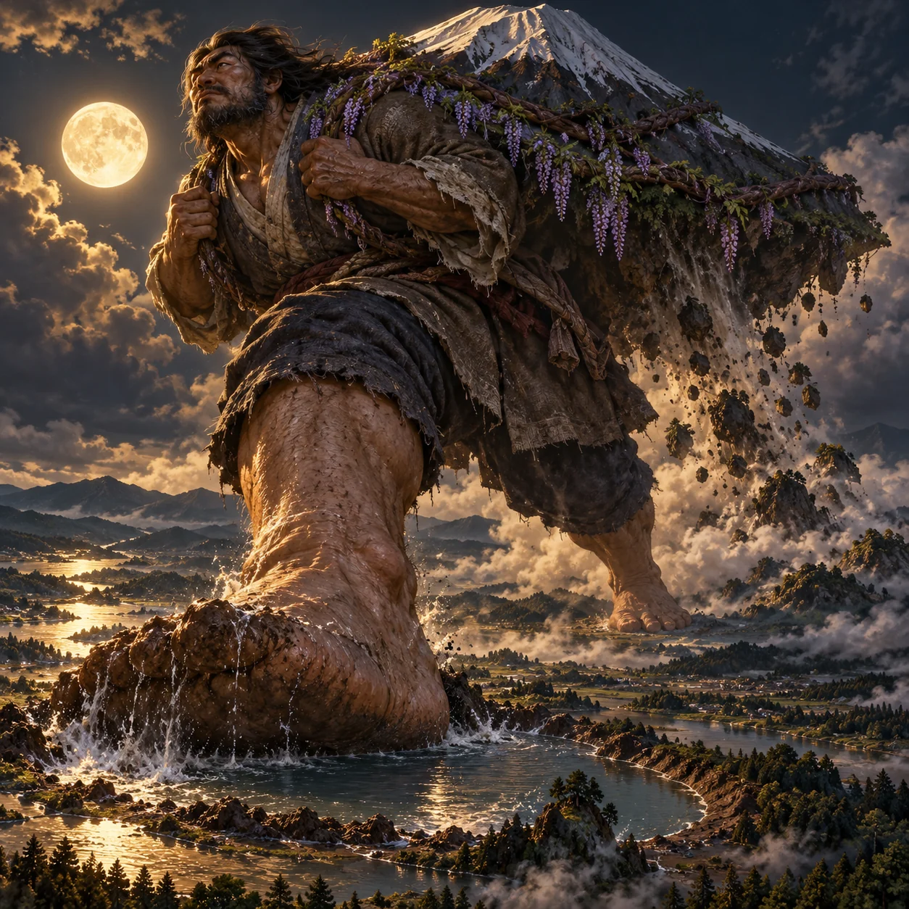
Great-person giant and mountain-bearing action; clothing/face editorial, no unsourced monster skin/third eye.
Aura: Kesan aktif berasal dari Stride over a miniature landscape with one immense bare foot pressing into ground, bend under Mount Fuji carried on his back, mountain tied with wisteria vines stretched taut (daidarabotchi-c01, daidarabotchi-c10, daidarabotchi-c02, daidarabotchi-c06, daidarabotchi-c11).
Audit ciri dan sumber
- [object Object]
- [object Object]
- [object Object]
Native dan 200px dilihat, Uji Sangar7/7. Colossal great-person body satu kepala/dua arm/dua leg membawa MtFuji di punggung with wisteria bindings; kaki membentuk basin air/pond c02/c06 dan earth debris c11. Ancient opaque clothing; mountain/trees pembanding jelas, bukan ordinary man. Finger grips partially occluded by vines.
Review sumberONE original square premium painterly cinematic Mythics illustration of Daidarabotchi, the Japanese great-person giant whose strides create ponds and whose actions move mountains.
ANATOMY: One colossal human-shaped giant, one head, two eyes, two arms, two legs; opaque coarse ancient robe and knee-length trousers, bare feet; no horns or other monster anatomy [daidarabotchi-c01,daidarabotchi-c10]
MOMENT: Stride over a miniature landscape with one immense bare foot pressing into ground, bend under Mount Fuji carried on his back, mountain tied with wisteria vines stretched taut.
POWER: Huge footprint forms a pond, water collecting in the deep heel depression; spilled earth from carried mountain forms small hills [daidarabotchi-c02,daidarabotchi-c06,daidarabotchi-c11]
SCALE & CAMERA: extreme low angle, close foreshortening, subject dominates square and identifying anatomy reads at200px; no invented giant scale unless documented.
LIGHT & WEATHER: one dominant moon source, deep warm walnut shadows, antique gold rim highlights, wet air and ordinary physical spray or grit appropriate to action.
SURFACE: tactile organic texture appropriate to anatomy, rough fur/feather/scales/cloth, wet stone, never plastic or statue.
SETTING: Kanto and Chubu Japanese landscape beneath Mount Fuji with tiny trees and ponds around fresh footprint [daidarabotchi-c05,daidarabotchi-c06,daidarabotchi-c09]
MOOD: dangerous imposing active moment, or reverent overwhelming majesty for sacred beings; never cute, calm, decorative or an ordinary animal/person.
HARD CONSTRAINTS: no text, glyphs, lettering, logo, border, watermark; no extra heads, eyes, limbs or fingers; no borrowed film/game/anime/comic design; no nudity or explicit gore; no generic glow aura, neon outline, energy ribbons or floating runes. One square PNG at least1024x1024.
Dingonek
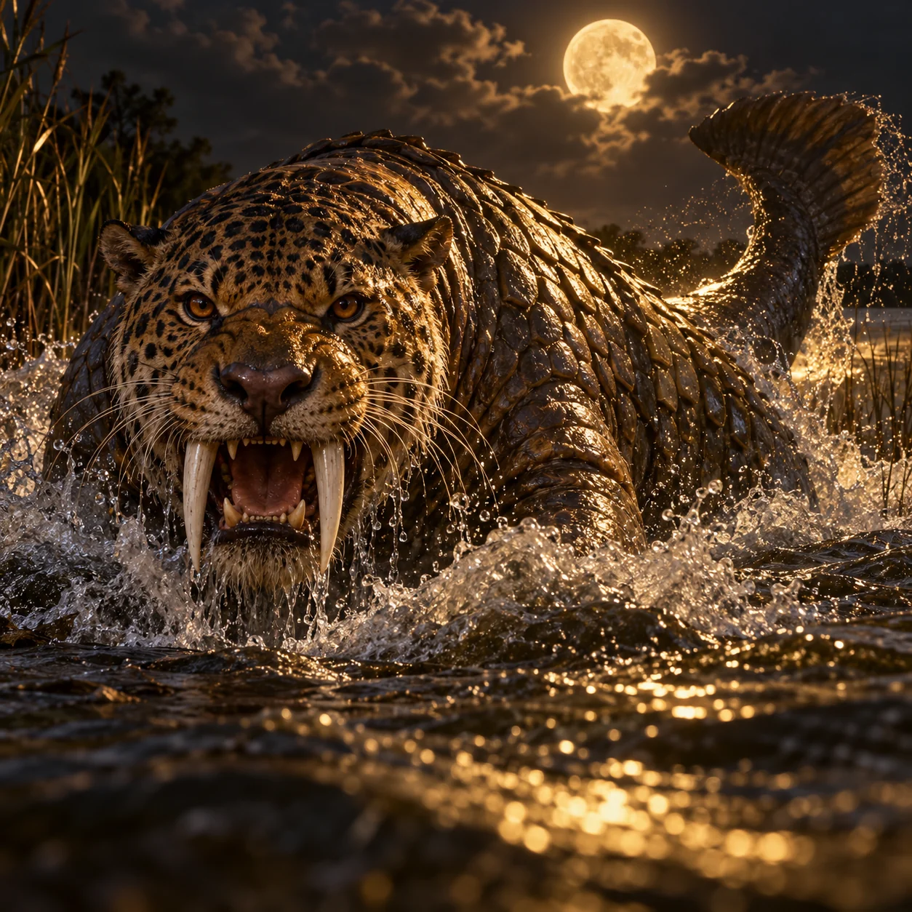
Complete Jordan c10 variant, not Hobley otter/no-fangs c05. Submerged limbs unspecified.
Aura: Kesan aktif berasal dari Drive forward out of Lake Victoria tributary toward low watersurface camera, great fangs close in foreground and broad fin tail sweeping an arc visible behind body (dingonek-c10, dingonek-c11).
Audit ciri dan sumber
- [object Object]
- [object Object]
- [object Object]
Native dan 200px dilihat, Uji Sangar7/7. Jordan c10 anatomy: one broad leopard-marked lioness-type head, two upper white long fangs, hippo-wide armadillo-scale back, one broad fin tail clearly visible. Lunge/spray physical, no supernatural attack, submerged limbs unspecified. No merging otter c05.
Review sumberONE original square premium painterly cinematic Mythics illustration of Dingonek, the water beast in John Alfred Jordan's Lake Victoria account.
ANATOMY: One head broad as a lioness head and leopard-marked, two long white fangs descending from upper jaw; hippo-broad torso clad overlapping armadillo-like scales, body14–15ft long, exactly one broad fin tail; lower limbs submerged and undefined, no horns or added wings [dingonek-c10]
MOMENT: Drive forward out of Lake Victoria tributary toward low watersurface camera, great fangs close in foreground and broad fin tail sweeping an arc visible behind body.
POWER: No documented supernatural power; water displacement and spray from physical lunge, leopard markings and armadillo scales clear [dingonek-c10,dingonek-c11]
SCALE & CAMERA: extreme low angle, close foreshortening, subject dominates square and identifying anatomy reads at200px; no invented giant scale unless documented.
LIGHT & WEATHER: one dominant moon source, deep warm walnut shadows, antique gold rim highlights, wet air and ordinary physical spray or grit appropriate to action.
SURFACE: tactile organic texture appropriate to anatomy, rough fur/feather/scales/cloth, wet stone, never plastic or statue.
SETTING: Lake Victoria Nyanza tributary, reed lined river water at night [dingonek-c07]
MOOD: dangerous imposing active moment, or reverent overwhelming majesty for sacred beings; never cute, calm, decorative or an ordinary animal/person.
HARD CONSTRAINTS: no text, glyphs, lettering, logo, border, watermark; no extra heads, eyes, limbs or fingers; no borrowed film/game/anime/comic design; no nudity or explicit gore; no generic glow aura, neon outline, energy ribbons or floating runes. One square PNG at least1024x1024.
Dover Demon
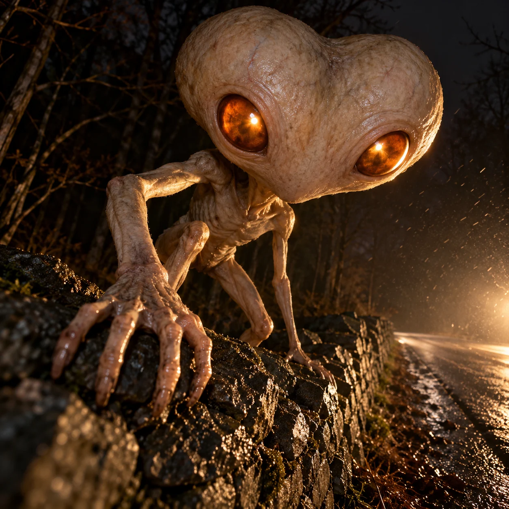
Witness-described form c13/c15; roadside wall c01. Headlight light replaces editorial moon as dominant.
Aura: Kesan aktif berasal dari Clamber across a broken roadside stone wall, long fingers gripping near camera and torso twisted towards viewer, enormous blank face suddenly caught by headlights (dover-demon-c06, dover-demon-c13, dover-demon-c14, dover-demon-c15).
Audit ciri dan sumber
- [object Object]
- [object Object]
- [object Object]
Native dan 200px dilihat. Sangar7/7: double-lobed enormous head, two orange eyes reflecting headlights, peach-white skin, NO nose/mouth, pencil-thin limbs/neck, long gripping fingers on broken stone wall. Active clamber and confronting blank face fill frame. One head/two arms/two legs, fingers correct natural five near hand, others occluded.
Review sumberONE original square premium painterly cinematic Mythics illustration of Dover Demon, the small thin large-headed being claimed in the1977 Dover roadside sightings.
ANATOMY: One huge watermelon/double-lobed peanut-shaped head, two large orange reflecting eyes and NO visible nose or mouth; pale peach-white skin, very thin neck, tiny torso, skinny arms and legs, long fingers; roughly4feet tall [dover-demon-c06,dover-demon-c13,dover-demon-c14,dover-demon-c15]
MOMENT: Clamber across a broken roadside stone wall, long fingers gripping near camera and torso twisted towards viewer, enormous blank face suddenly caught by headlights.
POWER: Orange eyes reflect vehicle headlights as described; no other supernatural power, no beam, forehead gem or aura [dover-demon-c15]
SCALE & CAMERA: extreme low angle, close foreshortening, subject dominates square and identifying anatomy reads at200px; no invented giant scale unless documented.
LIGHT & WEATHER: one dominant low vehicle-headlight source, deep warm walnut shadows, antique gold rim highlights, wet air and ordinary physical spray or grit appropriate to action.
SURFACE: tactile organic texture appropriate to anatomy, rough fur/feather/scales/cloth, wet stone, never plastic or statue.
SETTING: Broken stone wall beside Farm Street in Dover Massachusetts at night [dover-demon-c01,dover-demon-c05,dover-demon-c06]
MOOD: dangerous imposing active moment, or reverent overwhelming majesty for sacred beings; never cute, calm, decorative or an ordinary animal/person.
HARD CONSTRAINTS: no text, glyphs, lettering, logo, border, watermark; no extra heads, eyes, limbs or fingers; no borrowed film/game/anime/comic design; no nudity or explicit gore; no generic glow aura, neon outline, energy ribbons or floating runes. One square PNG at least1024x1024.
Engkanto
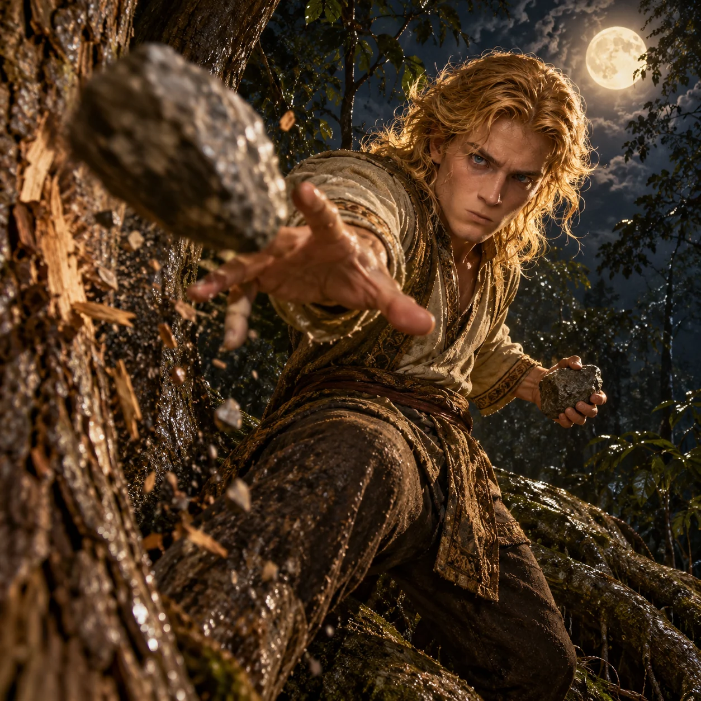
Fair golden-haired blue-eyed absent-philtrum manifestation c09/c26; punitive stone throwing c18. Opaque clothing and close framing editorial, respectful terrifying sacred encounter rather than generic portrait.
Aura: Kesan aktif berasal dari Throw a stone directly past the viewer, hand releasing in foreground, expression severe and focused; smooth upper lip close and prominent, a second stone clutched in other hand (engkanto-c01, engkanto-c09, engkanto-c26, engkanto-c18).
Audit ciri dan sumber
- [object Object]
- [object Object]
- [object Object]
Native dan 200px dilihat. Sangar7/7: severe fair blue-eyed/golden-haired spirit actively throws large stone past camera, second stone in other hand; c18 punishment works physically without glow. Smooth upper lip without philtrum c09 visible native, features/stone-action persist200px. Two hands five fingers, opaque clothing, tree/rock habitat; human-form variant deliberately lacks monster parts.
Review sumberONE original square premium painterly cinematic Mythics illustration of Engkanto, an uncanny environmental spirit in fair human manifestation punishing intruders through stone throwing.
ANATOMY: One fair-complexioned human-shaped adult male, blue eyes, golden hair, high bridged nose and conspicuously absent philtrum: perfectly smooth skin between nose and upper lip with no vertical groove; one head, two arms/two legs; fully opaque coarse long-sleeved tunic and trousers, no pointed elf ears [engkanto-c01,engkanto-c09,engkanto-c26]
MOMENT: Throw a stone directly past the viewer, hand releasing in foreground, expression severe and focused; smooth upper lip close and prominent, a second stone clutched in other hand.
POWER: Documented punishment by stone throwing; projectile and struck bark fragments physically visible, no levitation, psychic ribbons, flame or aura [engkanto-c18]
SCALE & CAMERA: extreme low angle, close foreshortening, subject dominates square and identifying anatomy reads at200px; no invented giant scale unless documented.
LIGHT & WEATHER: one dominant moon source, deep warm walnut shadows, antique gold rim highlights, wet air and ordinary physical spray or grit appropriate to action.
SURFACE: tactile organic texture appropriate to anatomy, rough fur/feather/scales/cloth, wet stone, never plastic or statue.
SETTING: Lonely forest at night beside massive old tree roots and a large rock, dwelling places of these spirits [engkanto-c29,engkanto-c30]
MOOD: dangerous imposing active moment, or reverent overwhelming majesty for sacred beings; never cute, calm, decorative or an ordinary animal/person.
HARD CONSTRAINTS: no text, glyphs, lettering, logo, border, watermark; no extra heads, eyes, limbs or fingers; no borrowed film/game/anime/comic design; no nudity or explicit gore; no generic glow aura, neon outline, energy ribbons or floating runes. One square PNG at least1024x1024.
Feilong
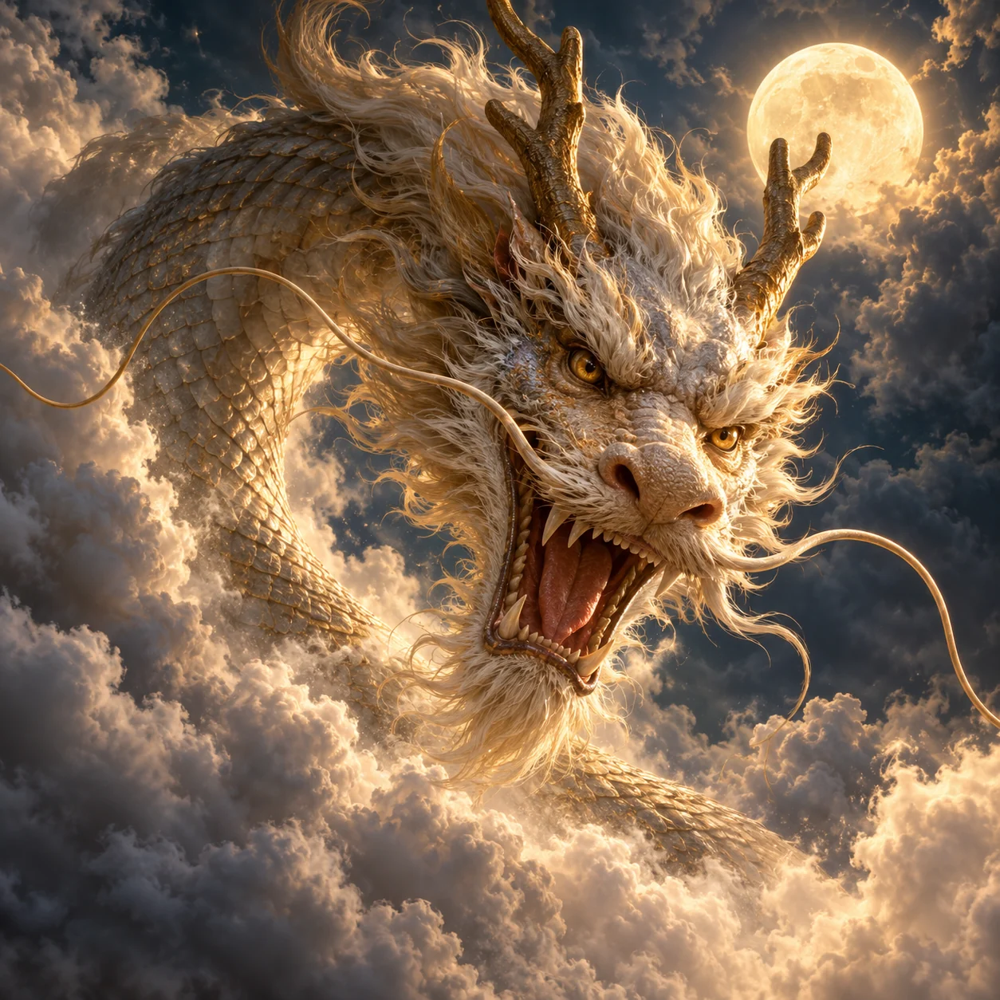
Cloud-riding flying Chinese dragon c01/c06; dragon head/horns/scales conventional editorial realization of category, not additional factual morphology; limbs outframe/behindclouds avoid invented count.
Aura: Kesan aktif berasal dari Fly out of cloudbank directly above viewer, head turned down toward camera and jaws open, neck coil curving back into cloud, active airborne movement (feilong-c01, feilong-c05, feilong-c06).
Audit ciri dan sumber
- [object Object]
- [object Object]
- [object Object]
Native dan 200px dilihat. Sangar7/7: one confronting dragon head and curling neck airborne among clouds; clouds envelop lower body, no wings/limbs/count invented. Two eyes/two antler-like horns, whiskers and scales editorial category realization, not facts claimed from source. Flight/cloud-riding c01/c06 only; no lightning/rain/storm control/fire. Horns larger than requested short interpretation but unspecific editorial category, not source count.
Review sumberONE original square premium painterly cinematic Mythics illustration of Feilong, the Chinese flying dragon riding among clouds.
ANATOMY: One dragon head and its long curling neck dominating the frame; conventional Chinese dragon muzzle, scaled neck, two eyes and two short antler-like horns rendered as editorial category interpretation; rest of body and all limbs are hidden behind thick clouds or outside frame, NO visible wings or invented limb count [feilong-c01]
MOMENT: Fly out of cloudbank directly above viewer, head turned down toward camera and jaws open, neck coil curving back into cloud, active airborne movement.
POWER: Ride clouds as documented, clouds follow the dragon; ordinary cloud vapor displaced around airborne neck, no storm/rain/lightning control or fire breath [feilong-c05,feilong-c06]
SCALE & CAMERA: extreme low angle, close foreshortening, subject dominates square and identifying anatomy reads at200px; no invented giant scale unless documented.
LIGHT & WEATHER: one dominant moon source, deep warm walnut shadows, antique gold rim highlights, wet air and ordinary physical spray or grit appropriate to action.
SURFACE: tactile organic texture appropriate to anatomy, rough fur/feather/scales/cloth, wet stone, never plastic or statue.
SETTING: High cloudy sky, flying dragon in heavens [feilong-c01,feilong-c04,feilong-c05]
MOOD: dangerous imposing active moment, or reverent overwhelming majesty for sacred beings; never cute, calm, decorative or an ordinary animal/person.
HARD CONSTRAINTS: no text, glyphs, lettering, logo, border, watermark; no extra heads, eyes, limbs or fingers; no borrowed film/game/anime/comic design; no nudity or explicit gore; no generic glow aura, neon outline, energy ribbons or floating runes. One square PNG at least1024x1024.
Fisher's ghost
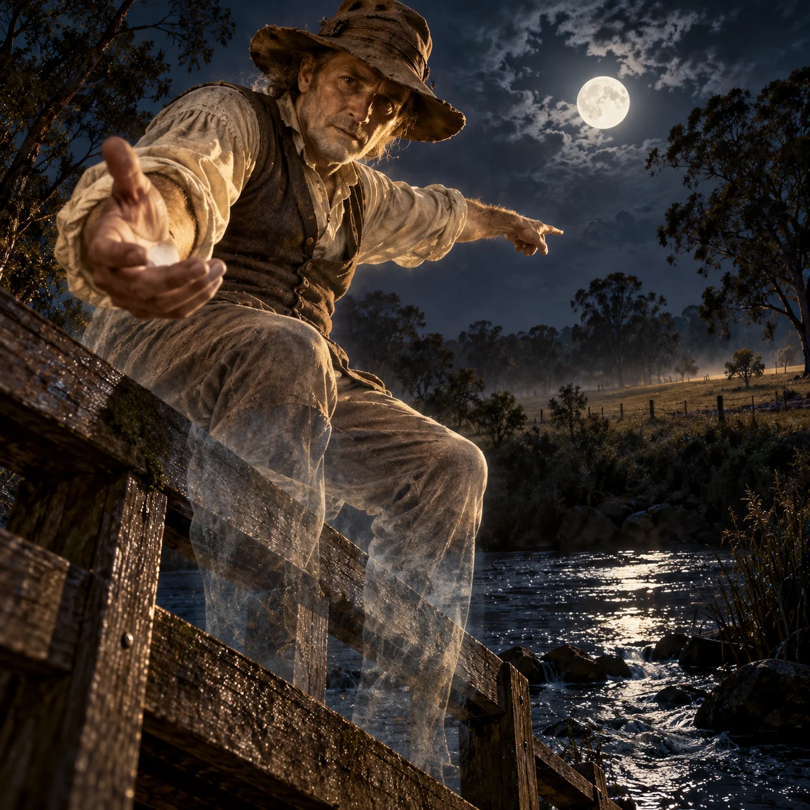
Bridge-sitting pointing apparition c06/c07/c20, not generic horror corpse. Historical clothing/partial transparency/editorial moon support documented ghost/disappearance; no invented wound/gore.
Aura: Kesan aktif berasal dari Sit precariously on the bridge rail just above low viewer, lean toward camera while silently beckoning with near hand and pointing with other arm firmly across creek to the paddock; ghost beginning to disappear at lower legs and hem, spectator looks up from foreground (fisher-s-ghost-c04, fisher-s-ghost-c06, fisher-s-ghost-c20, fisher-s-ghost-c07).
Audit ciri dan sumber
- [object Object]
- [object Object]
- [object Object]
Native dan 200px dilihat. Sangar7/7: apparition fills square above viewer, beckoning/pointing action clear on bridge rail, lower body visibly transparent with rail/creek showing through c07 disappearance; recognisable human farmer ghost instead of skull/corpse. Two arms/two legs, near hand natural five fingers, distant curled fingers foreshortened. Paddock across creek c20, no generic glow/runes or gore.
Review sumberONE original square premium painterly cinematic Mythics illustration of Fisher's Ghost, the spectre of farmer Frederick Fisher silently pointing where his body lay.
ANATOMY: One human male ghost with recognisable farmer face, one head/two eyes/two arms/two legs, fully opaque-cut early19th-century coarse shirt waistcoat and trousers; subtly partially translucent figure, solid identifiable face and pointing hand, no skull face or corpse injuries [fisher-s-ghost-c04,fisher-s-ghost-c06,fisher-s-ghost-c20]
MOMENT: Sit precariously on the bridge rail just above low viewer, lean toward camera while silently beckoning with near hand and pointing with other arm firmly across creek to the paddock; ghost beginning to disappear at lower legs and hem, spectator looks up from foreground.
POWER: Spectre points then disappears as documented; rail and moonlit creek visible through dissolving lower silhouette, no floating glyphs, skull, aura or colored mist [fisher-s-ghost-c07,fisher-s-ghost-c20]
SCALE & CAMERA: extreme low angle, close foreshortening, subject dominates square and identifying anatomy reads at200px; no invented giant scale unless documented.
LIGHT & WEATHER: one dominant moon source, deep warm walnut shadows, antique gold rim highlights, wet air and ordinary physical spray or grit appropriate to action.
SURFACE: tactile organic texture appropriate to anatomy, rough fur/feather/scales/cloth, wet stone, never plastic or statue.
SETTING: Old bridge rail over Campbelltown Queen Street creek, New South Wales, paddock on Worrall's land beyond creek under night sky [fisher-s-ghost-c02,fisher-s-ghost-c06,fisher-s-ghost-c07,fisher-s-ghost-c20]
MOOD: dangerous imposing active moment, or reverent overwhelming majesty for sacred beings; never cute, calm, decorative or an ordinary animal/person.
HARD CONSTRAINTS: no text, glyphs, lettering, logo, border, watermark; no extra heads, eyes, limbs or fingers; no borrowed film/game/anime/comic design; no nudity or explicit gore; no generic glow aura, neon outline, energy ribbons or floating runes. One square PNG at least1024x1024.
Fjalar (dwarf)
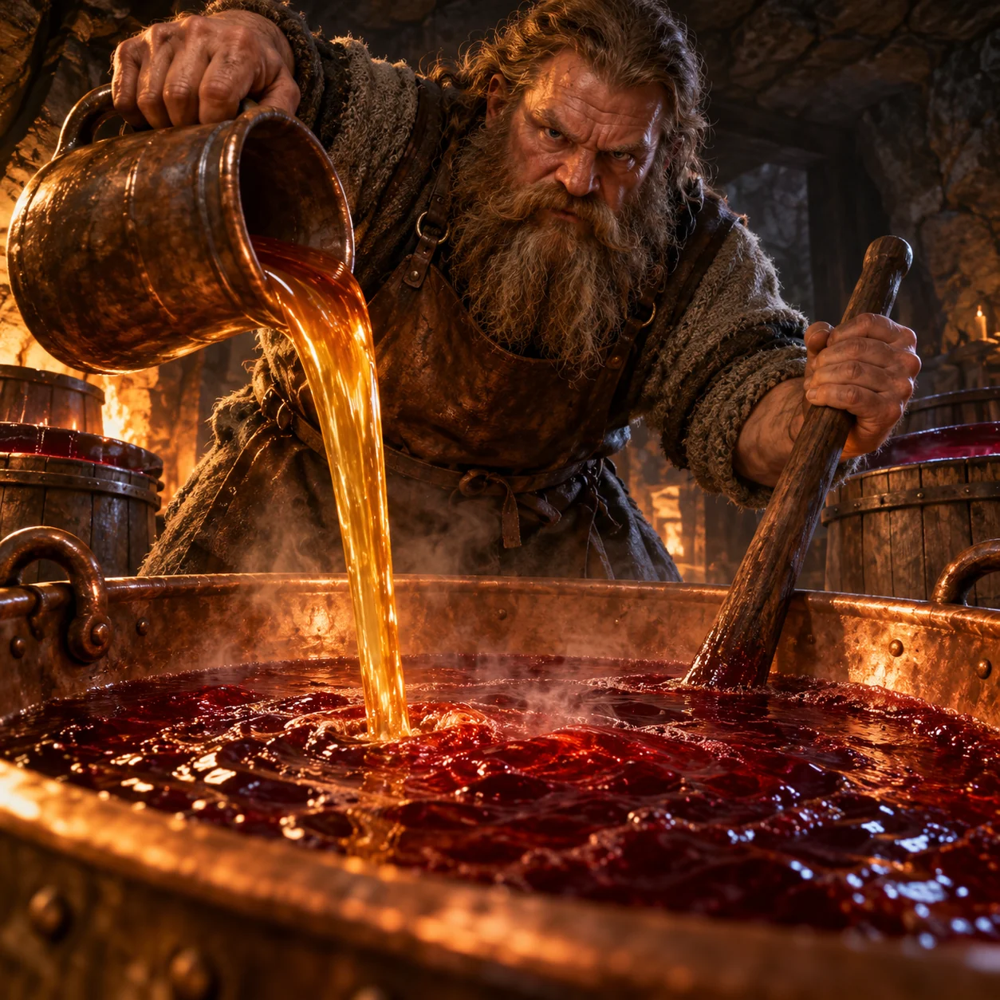
Fjalar single central dwarf making mead c04/c05; brother offscreen. Non-gory finished opaque liquid rather than murder scene. Beard/workclothing/interior materials editorial.
Aura: Kesan aktif berasal dari Lean forward over the great kettle toward low camera while pouring honey into dark red mead, grip heavy stirring spoon with other hand, glaring protectively at viewer, copper kettle close and dominating foreground (fjalar-q11969058-c01, fjalar-q11969058-c02, fjalar-q11969058-c04, fjalar-q11969058-c05).
Audit ciri dan sumber
- [object Object]
- [object Object]
- [object Object]
Native dan 200px dilihat. Sangar7/7: compact dwarf confronts viewer while pouring honey into dark red finished liquid and stirring, kettle and two wooden vats visible c04/c05. Two human hands gripping pitcher/spoon, clothing fully opaque, no monster anatomy. Dark red mead without body/injury/gore, no magical writing or glow; facial hair/workclothing editorial.
Review sumberONE original square premium painterly cinematic Mythics illustration of Fjalar, the Norse dwarf preparing the mead of poetry after killing Kvasir.
ANATOMY: One short human-shaped adult dwarf, broad compact body, one head/two eyes/two arms/two legs, fully opaque rough wool tunic/trousers and leather apron; grounded human hands, no horns or pointed ears; editorial aged stern face and beard [fjalar-q11969058-c01,fjalar-q11969058-c02]
MOMENT: Lean forward over the great kettle toward low camera while pouring honey into dark red mead, grip heavy stirring spoon with other hand, glaring protectively at viewer, copper kettle close and dominating foreground.
POWER: Documented blend of honey and Kvasir's blood makes mead of poetry: dark opaque red liquid mixes with amber honey in kettle; no body, wound, gore, floating writing or magical glow [fjalar-q11969058-c04,fjalar-q11969058-c05]
SCALE & CAMERA: extreme low angle, close foreshortening, subject dominates square and identifying anatomy reads at200px; no invented giant scale unless documented.
LIGHT & WEATHER: one dominant warm hearth-fire source, deep warm walnut shadows, antique gold rim highlights, wet air and ordinary physical spray or grit appropriate to action.
SURFACE: tactile organic texture appropriate to anatomy, rough fur/feather/scales/cloth, wet stone, never plastic or statue.
SETTING: Inside the dwarves' abode, one kettle Odrerir and two separate wooden vats Son and Bodn behind; no readable labels, low doorway and rough stone interior editorial [fjalar-q11969058-c04,fjalar-q11969058-c05]
MOOD: dangerous imposing active moment, or reverent overwhelming majesty for sacred beings; never cute, calm, decorative or an ordinary animal/person.
HARD CONSTRAINTS: no text, glyphs, lettering, logo, border, watermark; no extra heads, eyes, limbs or fingers; no borrowed film/game/anime/comic design; no nudity or explicit gore; no generic glow aura, neon outline, energy ribbons or floating runes. One square PNG at least1024x1024.
Galloway Puma
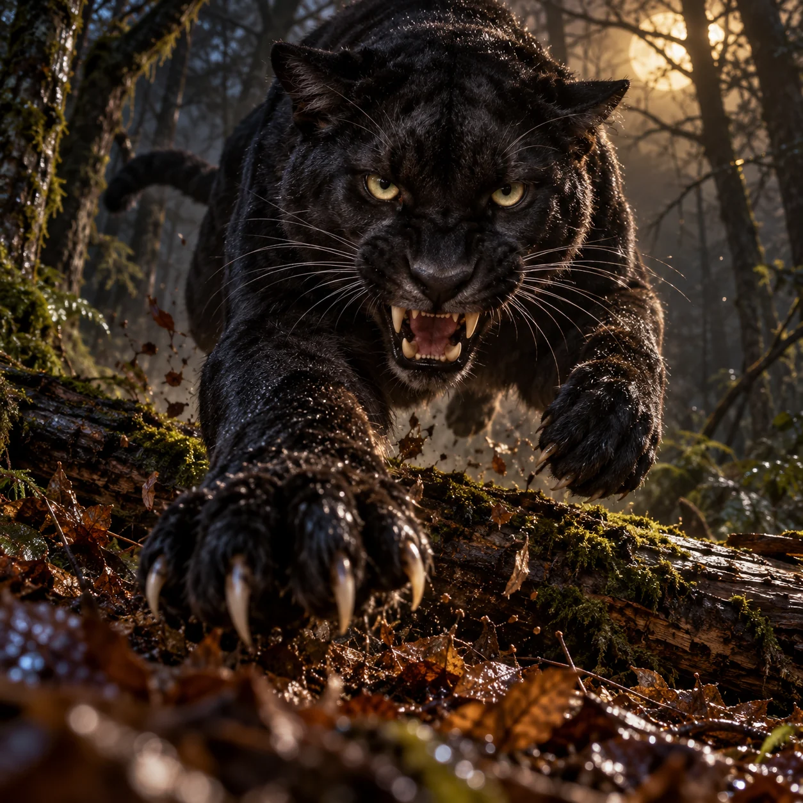
Galloway Puma varian bigblackcat berukuran lebih besar dari Alsatian, bukan hewan transparan atau kucing kosmis.
Aura: No supernatural power documented; danger comes from close predatory motion, natural teeth and claws, the documented large black feline and physically scattering leaves [galloway-puma-c03, galloway-puma-c04]
Audit ciri dan sumber
- [object Object]
- [object Object]
- [object Object]
Native+200 dilihat: satu bigblackcat c03/c04, satu kepala dan four-leg feline body dengan rear legs occluded, forepaw dan jaws menyerbu saat melompati kayu. Sangar dari close predatory leap dan cakar natural, tanpa kuasa yang dikarang. Forestc02. Uji7/7.
Review sumberONE original square premium painterly cinematic Mythics illustration of Galloway Puma, the reported large black phantom cat of Dumfries and Galloway, in the big-black-cat sighting variant.
ANATOMY: ONE large natural BLACK CAT with one feline head, two eyes, exactly four feline legs and one long tail; sleek black fur, cougar-like proportions larger than an Alsatian dog. No wings, horns, extra limbs, human eyes or supernatural transparency [galloway-puma-c01, galloway-puma-c03, galloway-puma-c04]
MOMENT: Bound over a fallen forest trunk directly toward the viewer in a predatory rush, bare natural feline teeth and thrust a clawed forepaw into the foreground, ears lowered and eyes focused fiercely.
POWER: No supernatural power documented; danger comes from close predatory motion, natural teeth and claws, the documented large black feline and physically scattering leaves [galloway-puma-c03, galloway-puma-c04]
SCALE & CAMERA: extreme low angle; extreme ground-level close-up just beneath the leaping cat, face and forepaws fill the frame; ordinary large-cat proportions, not an invented gigantic monster; subject fills the image, distinguishing anatomy readable at 200 pixels.
LIGHT & WEATHER: one dim amber moonbeam through forest branches, deep walnut-black fur shadows, wet leaves and dust.
SURFACE: wet black fur, natural feline teeth and claws, mossy rough wood.
SETTING: Shadowed Galloway forest near Kirroughtree and Newton Stewart, fallen plain wood and damp Scottish undergrowth [galloway-puma-c01, galloway-puma-c02]
MOOD: dangerous or awe-inspiring, imposing active presence, never cute, neutral, decorative or calm.
HARD CONSTRAINTS: one square image, native resolution at least 1024x1024; no text, glyphs, runes, inscriptions, symbols, lettering, logo, border, frame or watermark; all architecture and objects plain and uninscribed; no extra heads, limbs or fingers; no borrowed film, game, anime or comic design; no nudity or explicit gore; fully opaque clothing; no generic glowing aura, neon outline, energy ribbons or floating symbols.
Greif
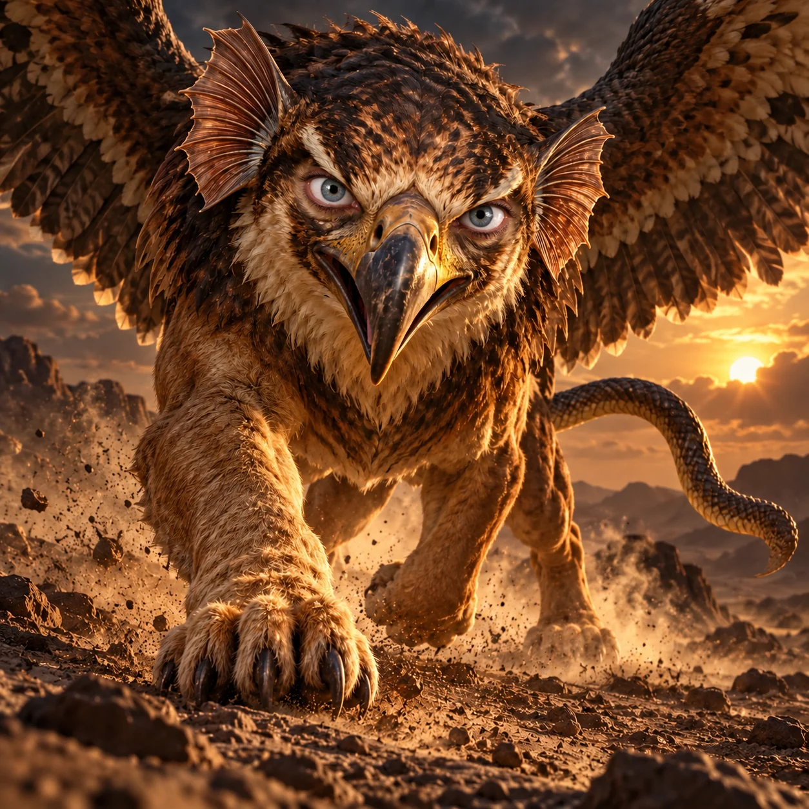
Greif varian Ptolemaic c04: falconbeak/humaneyes/lionlimbs/fishears/snaketail, tanpa kepala manusia MiddleKingdom.
Aura: No magic aura; protective/desert-hunting nature expressed by physical charging motion, wings beating real dust and sand and serpentine tail lashing behind [greif-c04, greif-c05, greif-c09]
Audit ciri dan sumber
- [object Object]
- [object Object]
- [object Object]
Native+200 attempt02 dilihat: falconbeak, dua humaneyes whitesclera+iris kecil jelas, dua fishear fins, dua wings, empat lionlimbs dengan paw belakang tertutup body dan satu snaketail tanpa kepala kedua c04. Chargeaktif desertc05 tanpa glyph/aura. Uji7/7.
Review sumberONE original square premium painterly cinematic Mythics illustration of Greif, the Ptolemaic Egyptian winged hybrid described in the demotic fable with falcon beak, human eyes, lion limbs, fish ears and serpent tail.
ANATOMY: ONE original living winged hybrid with exactly one head, large FALCON BEAK, exactly two unmistakably HUMAN EYES with white sclera and small dark round pupils, two clearly readable FISH EARS expressed as fin-ray-textured ear flaps at the sides of the head, lion body and exactly FOUR LION LIMBS ending in lion paws, two broad natural feathered wings, and one long SNAKE-LIKE TAIL without a second head. No human head between wings, no eagle forelegs, no extra faces [greif-c04]
MOMENT: Charge toward the viewer across desert stone, spread both feathered wings while the four lion paws drive forward, lower the falcon beak and turn its two human eyes directly on us in fierce protective authority.
POWER: No magic aura; protective/desert-hunting nature expressed by physical charging motion, wings beating real dust and sand and serpentine tail lashing behind [greif-c04, greif-c05, greif-c09]
SCALE & CAMERA: extreme low angle; extreme low close angle with beak, HUMAN EYES and FISH ear fins filling foreground; body and four lion paws visible in a running stride; subject fills the image, distinguishing anatomy readable at 200 pixels.
LIGHT & WEATHER: one dying amber sunbeam, high contrast walnut shadows, physical desert dust.
SURFACE: coarse lion fur, falcon feather/beak texture, ray-textured fish ear fins, rough snake tail scales.
SETTING: A dark North African Egyptian desert hunting ground with plain rocky sand, no statues, hieroglyphs, carved writing or painted palette [greif-c05]
MOOD: dangerous or awe-inspiring, imposing active presence, never cute, neutral, decorative or calm.
HARD CONSTRAINTS: one square image, native resolution at least 1024x1024; no text, glyphs, runes, inscriptions, symbols, lettering, logo, border, frame or watermark; all architecture and objects plain and uninscribed; no extra heads, limbs or fingers; no borrowed film, game, anime or comic design; no nudity or explicit gore; fully opaque clothing; no generic glowing aura, neon outline, energy ribbons or floating symbols.
TARGETED EDIT of the supplied original: change ONLY the two EYES. Replace the owl-like golden bird eyes with unmistakably HUMAN EYES: very wide clearly white sclera surrounding small pale blue-gray human irises, round small black pupils, almond-shaped human eyelids. The head still has the falcon BEAK, not a human mouth or human face. Preserve both fish-ear fins, two wings, four lion limbs, one serpentine tail, active running pose, background, lighting and square composition. No other changes. Human eyes are required by the source claim.
Grootslang
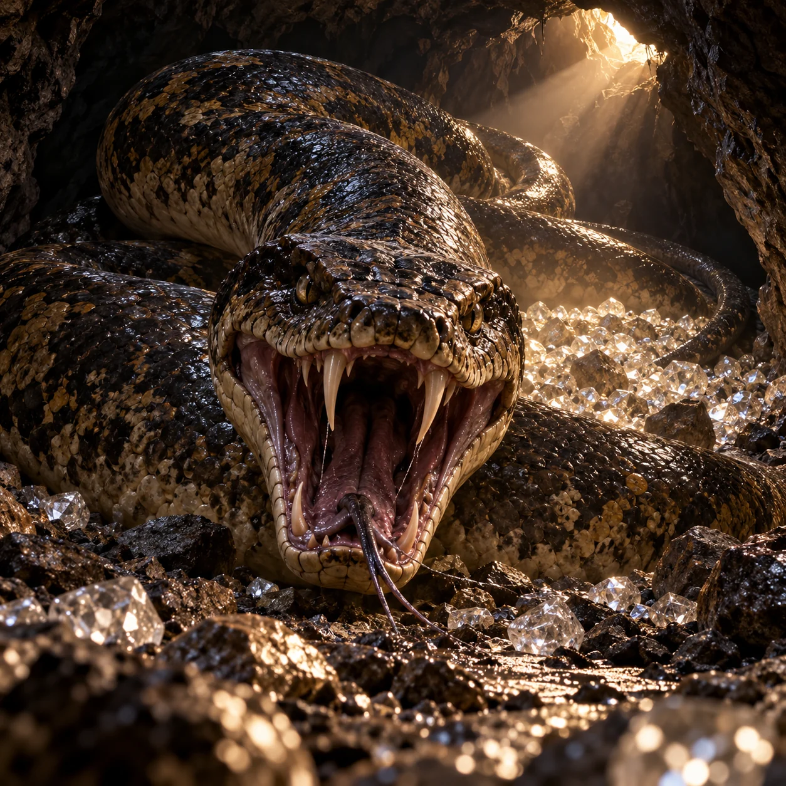
Grootslang ular raksasa empat puluh kaki penjaga berlian, tanpa elephanttraits modernmedia.
Aura: No magical effects; the documented giant serpent actively guards its diamonds, coils scrape loose cave grit and shift rough stones; eyes are ordinary snake eyes, not diamond gems or glowing beams [grootslang-c03, grootslang-c04, grootslang-c21]
Audit ciri dan sumber
- [object Object]
- [object Object]
- [object Object]
Native+200 dilihat: satu huge serpent limbless c02/c17 dengan satu kepala/twoeyes dan coils menutup diamondhoard c03/c21 di cavec01/c14. Tanpa elephanttrunk/tusks/legs atau diamondeyes. Mulut hiss dan kepala turun memberi confrontational action. Uji7/7.
Review sumberONE original square premium painterly cinematic Mythics illustration of Grootslang, the huge forty-foot Great Snake guarding diamonds in a deep Richtersveld cavern, without modern elephant traits.
ANATOMY: ONE enormous natural SERPENT, one snake head, two natural snake eyes, one long muscular scaled body and tapering tail; absolutely no legs, arms, trunk, tusks, wings, horns or elephant features. Forty-foot-long serpent of roughly three-foot track width [grootslang-c02, grootslang-c17, grootslang-c19]
MOMENT: Rear and lower its immense snake head toward the viewer from tightly piled coils, open its fanged mouth and physically block the entrance to its diamond hoard.
POWER: No magical effects; the documented giant serpent actively guards its diamonds, coils scrape loose cave grit and shift rough stones; eyes are ordinary snake eyes, not diamond gems or glowing beams [grootslang-c03, grootslang-c04, grootslang-c21]
SCALE & CAMERA: extreme low angle; extreme low angle at cave-floor level, forty-foot serpent body loops against small cave stones, head and neck fill foreground; subject fills the image, distinguishing anatomy readable at 200 pixels.
LIGHT & WEATHER: one narrow amber light shaft from the cavern entrance, deep black-walnut shadows, reflected natural highlights on wet scales and clear crystals, cave dust.
SURFACE: wet rugged dark serpent scales, gritty cave floor, clear rough uncut diamonds.
SETTING: A deep black cavern in the Richtersveld, South Africa, rough natural uncut diamond crystals visible behind its coils in the cave [grootslang-c01, grootslang-c03, grootslang-c14]
MOOD: dangerous or awe-inspiring, imposing active presence, never cute, neutral, decorative or calm.
HARD CONSTRAINTS: one square image, native resolution at least 1024x1024; no text, glyphs, runes, inscriptions, symbols, lettering, logo, border, frame or watermark; all architecture and objects plain and uninscribed; no extra heads, limbs or fingers; no borrowed film, game, anime or comic design; no nudity or explicit gore; fully opaque clothing; no generic glowing aura, neon outline, energy ribbons or floating symbols.
Gulyabani
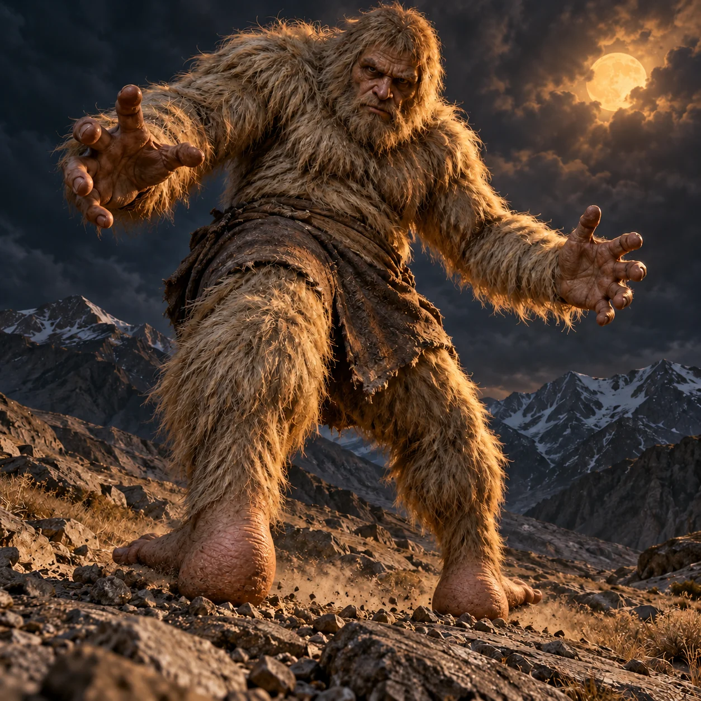
Gulyabani varian EasternPamir c06/c07 dengan bulu camel yellowish-grey dan kaki terbalik, menantang gulat.
Aura: No magic effects; its documented wrestling challenge and large hairy humanlike anatomy supply menace, disturbed grit scatters under its reversed feet [gulyabani-c06, gulyabani-c07, gulyabani-c09]
Audit ciri dan sumber
- [object Object]
- [object Object]
- [object Object]
Varian Pamir: rambut kuning-abu panjang pendek merata, dua kaki terbalik dengan tumit di depan dan jari di belakang terlihat pada native serta 200 px; pose tantangan gulat, anatomi satu kepala dua tangan dua kaki, busana buram, tanpa cahaya ajaib.
Review sumberONE original square premium painterly cinematic Mythics illustration of Gulyabani, the Eastern Pamir gulbiyaban in its yellowish-grey camel-haired large humanlike variant with backwards feet.
ANATOMY: ONE large humanlike being, one head, two eyes, exactly two normal human arms and two humanlike legs, body covered thickly in yellowish-GREY CAMEL-like coarse hair. Both bare feet are REVERSED: heels face the direction its torso is advancing, toe ends point behind it. No Turkish long beard, no horns, tail or animal head. Opaque rough hip wrap covers all pelvic anatomy; thick fur covers torso [gulyabani-c06, gulyabani-c07]
MOMENT: Step toward the viewer and spread two hands in a fierce challenge to wrestle, lean its camel-haired shoulders forward, with both backwards feet entirely visible and planted heel-first.
POWER: No magic effects; its documented wrestling challenge and large hairy humanlike anatomy supply menace, disturbed grit scatters under its reversed feet [gulyabani-c06, gulyabani-c07, gulyabani-c09]
SCALE & CAMERA: extreme low angle; extreme low three-quarter full-body view that keeps both bare reversed feet unobstructed at the front lower edge; torso and knees advance toward viewer-left, but toes of BOTH feet point viewer-right behind the heels; head turns down to confront us; subject fills the image, distinguishing anatomy readable at 200 pixels.
LIGHT & WEATHER: one low amber moonbeam across grey-yellow hair, deep walnut rock shadows, windblown physical grit.
SURFACE: matted camel-like yellowish-grey fur, rough skin and reversed bare feet, coarse opaque hip wrap, dusty stone.
SETTING: A deserted barren place in the Eastern Pamir, rough mountain ground with plain rock and thin dry grass, no cemetery or Turkish urban setting [gulyabani-c06, gulyabani-c08, gulyabani-c09]
MOOD: dangerous or awe-inspiring, imposing active presence, never cute, neutral, decorative or calm.
HARD CONSTRAINTS: one square image, native resolution at least 1024x1024; no text, glyphs, runes, inscriptions, symbols, lettering, logo, border, frame or watermark; all architecture and objects plain and uninscribed; no extra heads, limbs or fingers; no borrowed film, game, anime or comic design; no nudity or explicit gore; fully opaque clothing; no generic glowing aura, neon outline, energy ribbons or floating symbols.
TARGETED ANATOMY EDIT of the supplied original. Change ONLY BOTH FEET below the ankles: rotate EACH FOOT 180 DEGREES around its ankle so BOTH feet point BACKWARDS relative to the torso and knees. The face and knees face the viewer; the feet do the opposite. The rounded HEELS must be the closest forward parts to the viewer; all toes extend behind the ankles AWAY from the viewer, visibly at the sides behind the legs. No toes or claws may appear at the forward foreground ends. Show both broad rounded heel pads facing the viewer, with the toe ends visible only farther behind them. Keep the legs and knees in their current orientation. Preserve the face, upper body, hands, pose, fur, opaque clothing, background and lighting. Two legs and two feet only, no extra foot. Also shorten the chin hair to body-length coarse fur so there is no separate long Turkish beard.
Hırtık
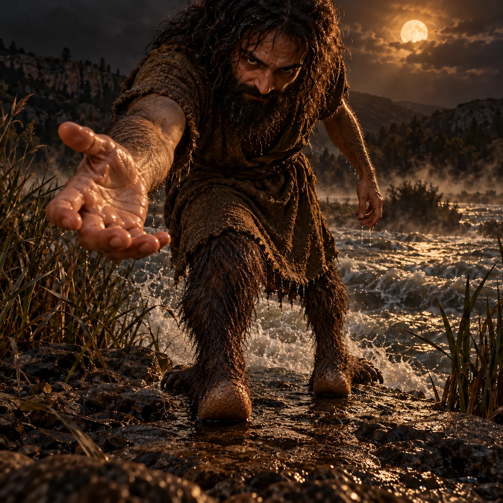
Hirtik wujud upperhuman/loweranimal dengan dua kaki animal terbalik, keluar dari Euphrates sebagai pemikat.
Aura: No magical energy or burning hair; documented river-luring disguise gives the threatening invitation, physical footsteps churn river spray. Do not show fire because the fire-imitation escape condition is not being depicted [h-rt-k-c02, h-rt-k-c03, h-rt-k-c08]
Audit ciri dan sumber
- [object Object]
- [object Object]
- [object Object]
Manusia bagian atas, dua kaki hewan berambut terbalik dengan tumit di depan dan cakar di belakang; kedua orientasi terbaca native dan 200 px. Gestur memikat di tepi sungai, busana buram, tidak menampilkan api tanpa kondisi peniruan.
Review sumberONE original square premium painterly cinematic Mythics illustration of Hırtık, Hirtik, the hair-covered river jinn with a human upper body and backwards animal legs and feet.
ANATOMY: ONE being with a HUMAN head and upper torso, two human eyes and two human arms with ordinary five-finger hands and SHORT NATURAL fingernails; exactly two ANIMAL-SHAPED shaggy legs with furry animal paws that point BACKWARDS. Both heels face the advancing human torso and both toe/claw ends point behind. Body covered in dark coarse hair; fully opaque rough brown tunic covers entire torso and pelvic area. No antlers, horns, wings, extra legs or tail [h-rt-k-c01, h-rt-k-c08]
MOMENT: Step out of the moving river toward the viewer and extend one ordinary human hand in a deceptive invitation, bow its human face down with predatory intent, show both reversed animal feet wet and planted on the shore.
POWER: No magical energy or burning hair; documented river-luring disguise gives the threatening invitation, physical footsteps churn river spray. Do not show fire because the fire-imitation escape condition is not being depicted [h-rt-k-c02, h-rt-k-c03, h-rt-k-c08]
SCALE & CAMERA: extreme low angle; extreme low three-quarter full-body close view; human torso/head advance toward viewer-left but toes of BOTH animal paws point viewer-right behind heels; both feet fully visible on the front shore; hands remain normal human hands; subject fills the image, distinguishing anatomy readable at 200 pixels.
LIGHT & WEATHER: one dim amber moon shaft, deep walnut shadows, moving river spray and low ordinary mist, no fire.
SURFACE: coarse matted body hair, natural human skin, hairy animal feet, opaque rough tunic, wet river stone.
SETTING: A dark riverbank beside the running Euphrates near Elazig, water rushing behind and through reeds [h-rt-k-c02, h-rt-k-c03, h-rt-k-c04]
MOOD: dangerous or awe-inspiring, imposing active presence, never cute, neutral, decorative or calm.
HARD CONSTRAINTS: one square image, native resolution at least 1024x1024; no text, glyphs, runes, inscriptions, symbols, lettering, logo, border, frame or watermark; all architecture and objects plain and uninscribed; no extra heads, limbs or fingers; no borrowed film, game, anime or comic design; no nudity or explicit gore; fully opaque clothing; no generic glowing aura, neon outline, energy ribbons or floating symbols.
TARGETED ANATOMY EDIT of the supplied original. Change ONLY BOTH FEET below the ankles: rotate EACH FOOT 180 DEGREES around its ankle so BOTH feet point BACKWARDS relative to the torso and knees. The face and knees face the viewer; the feet do the opposite. The rounded HEELS must be the closest forward parts to the viewer; all toes and animal toe claws extend behind the ankles AWAY from the viewer, visibly at the sides behind the legs. No toes or claws may appear at the forward foreground ends. Show both broad rounded heel pads facing the viewer, with the toe ends visible only farther behind them. Keep the legs and knees in their current orientation. Preserve the face, upper body, hands, pose, fur, opaque clothing, background and lighting. Two legs and two feet only, no extra foot.
Hāhau-whenua
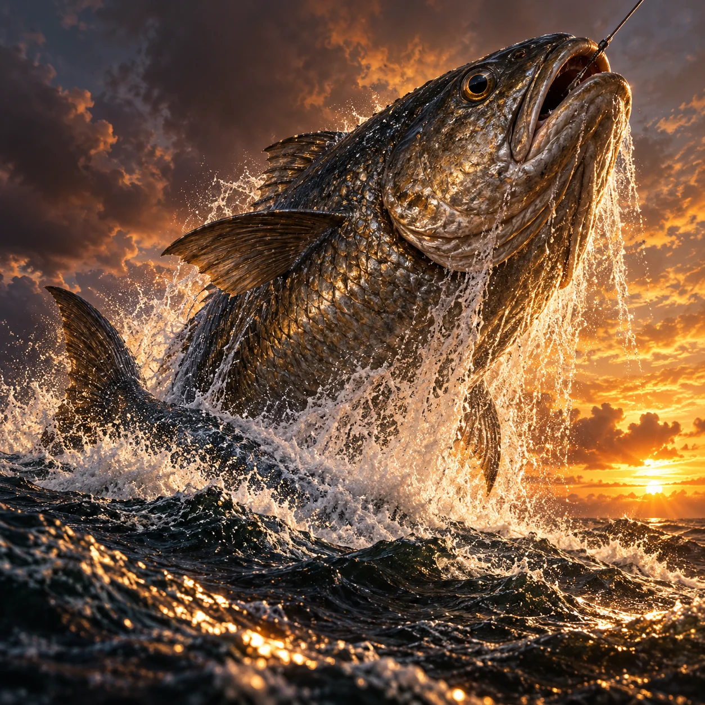
Hahau-whenua ikan besar hidup sebelum berubah menjadi NorthIsland, sedang ditarik dari kedalaman samudra.
Aura: The documented great fish is physically pulled up from the ocean; immense seawater cascades off scales and body as it rises, no generic energy or magical aura [hahau-whenua-c01, hahau-whenua-c02, hahau-whenua-c04]
Audit ciri dan sumber
- [object Object]
- [object Object]
- [object Object]
Satu ikan besar hidup ditarik tali dari laut; kepala, sisik, sirip dan ekor konsisten. Komposisi mendominasi dengan air tersibak dan tali tegang, terbaca native serta 200 px; tidak mengganti ikan dengan pulau atau mengarang anatomi Maui.
Review sumberONE original square premium painterly cinematic Mythics illustration of Hāhau-whenua, the huge living fish Hauhau-whenua that Maui pulls from the ocean before it becomes New Zealand's North Island.
ANATOMY: ONE immense living marine FISH, one fish head, two natural fish eyes, one broad scaled fish body and one natural caudal tail with ordinary fish fins. No island silhouette in place of fish, no horns, fangs, human face, tentacles, wings or invented stingray species; a generic great fish, not a named species [hahau-whenua-c01, hahau-whenua-c02, hahau-whenua-c07]
MOMENT: Struggle upward toward the viewer as a taut fishing line extending out of frame draws the giant fish from the ocean depths, arch the living fish body and drive its tail through heaving seawater.
POWER: The documented great fish is physically pulled up from the ocean; immense seawater cascades off scales and body as it rises, no generic energy or magical aura [hahau-whenua-c01, hahau-whenua-c02, hahau-whenua-c04]
SCALE & CAMERA: extreme low angle; extreme low angle at the water surface under the immense rising fish, head and scaled body dominate; tiny taut line at upper edge indicates the source act, no unsupported depiction of Maui's bodily appearance; subject fills the image, distinguishing anatomy readable at 200 pixels.
LIGHT & WEATHER: one dying amber sunset shaft, deep walnut ocean shadows, huge physical salt spray.
SURFACE: rugged wet bronze-grey fish scales, rough fin membranes, surging seawater.
SETTING: The open ocean from whose depths Maui pulls the great fish, rolling dark sea and storm-shadowed horizon, no completed island landscape [hahau-whenua-c02, hahau-whenua-c04]
MOOD: respectful awe-inspiring mythic emergence, overwhelming living fish in active struggle, not malicious monster or ordinary fish at pasture.
HARD CONSTRAINTS: one square image, native resolution at least 1024x1024; no text, glyphs, runes, inscriptions, symbols, lettering, logo, border, frame or watermark; all architecture and objects plain and uninscribed; no extra heads, limbs or fingers; no borrowed film, game, anime or comic design; no nudity or explicit gore; fully opaque clothing; no generic glowing aura, neon outline, energy ribbons or floating symbols.
Hakawai (mythology)
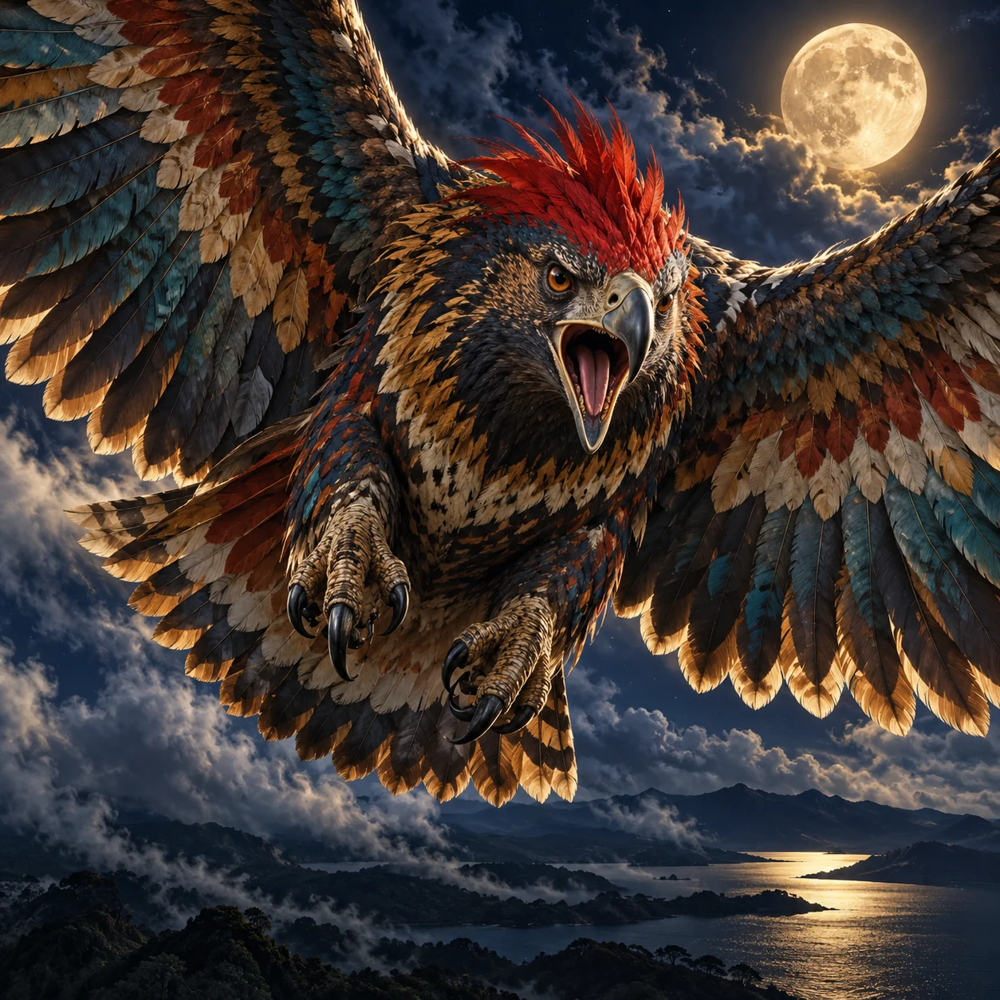
Hōkioi burung pemangsa raksasa sebesar moa, berbulu warna-warni dan jambul merah menurut Tregear (c12); bukan hipotesis snipe/frigatebird.
Aura: Its descending night flight and roaring call are the omen-bearing action; express the non-vocal high-speed roar through physically swept feather tips and passing cloud mist, not visible sound lettering, shock rings, fire or supernatural lights. Keep the bird fully visible so its documented plumage is readable. [hakawai-mythology-c03, hakawai-mythology-c05, hakawai-mythology-c07]
Audit ciri dan sumber
- [object Object]
- [object Object]
- [object Object]
Hōkioi c12: burung pemangsa raksasa dengan bulu banyak warna dan jambul merah jelas; dua sayap dua kaki satu kepala, terbang turun dan berseru pada malam bulan. Native+200 terbaca dominan, tidak memakai anatomi moa atau hipotesis snipe/frigatebird, tanpa glyph/glow.
Review sumberONE original square premium painterly cinematic Mythics illustration of Hakawai (mythology), the gigantic Māori Hōkioi bird-of-prey tradition recorded by Tregear, not a modern zoological reconstruction.
ANATOMY: One huge flying bird of prey with one head, hooked avian beak, two eyes, exactly two feathered wings and exactly two taloned avian legs. MANY-COLOURED feathers, and a clearly separate vivid RED bunch of feathers on the crown of its head. Size compared to moa means huge size only, NOT moa shape or flightlessness. Use a coherent flying raptor body, not an ostrich, snipe or frigatebird reconstruction. [hakawai-mythology-c04, hakawai-mythology-c12]
MOMENT: sweeping down from a high night sky straight toward the low camera, wings powerfully spread and flexed, beak open in its call, both legs tucked but visible.
POWER: Its descending night flight and roaring call are the omen-bearing action; express the non-vocal high-speed roar through physically swept feather tips and passing cloud mist, not visible sound lettering, shock rings, fire or supernatural lights. Keep the bird fully visible so its documented plumage is readable. [hakawai-mythology-c03, hakawai-mythology-c05, hakawai-mythology-c07]
SCALE & CAMERA: extreme low angle; dominant sweeping flight close to camera, huge wing mass and talons, whole head and two wing roots visible; subject fills the image, distinguishing anatomy readable at 200 pixels.
LIGHT & WEATHER: strong amber moon rim light and cool blue-black sky shadows; head tuft and multicoloured wings remain clearly readable.
SURFACE: individual richly textured feather layers with editorial muted teal, rust, gold and indigo sections; red crown tuft is bright natural plumage, not flaming or glowing.
SETTING: High moonlit night sky above distant dark New Zealand land silhouettes; only faint mist at altitude, no daylight storm, no invented temple or tribal artifacts. [hakawai-mythology-c02, hakawai-mythology-c07, hakawai-mythology-c10]
MOOD: sacred, ominous, immense and imposing, a powerful omen of war without soldiers or violence.
HARD CONSTRAINTS: one square image, native resolution at least 1024x1024; no text, glyphs, runes, inscriptions, symbols, lettering, logo, border, frame or watermark; all architecture and objects plain and uninscribed; no extra heads, limbs or fingers; no borrowed film, game, anime or comic design; no nudity or explicit gore; fully opaque clothing; no generic glowing aura, neon outline, energy ribbons or floating symbols.
Hasshaku-sama
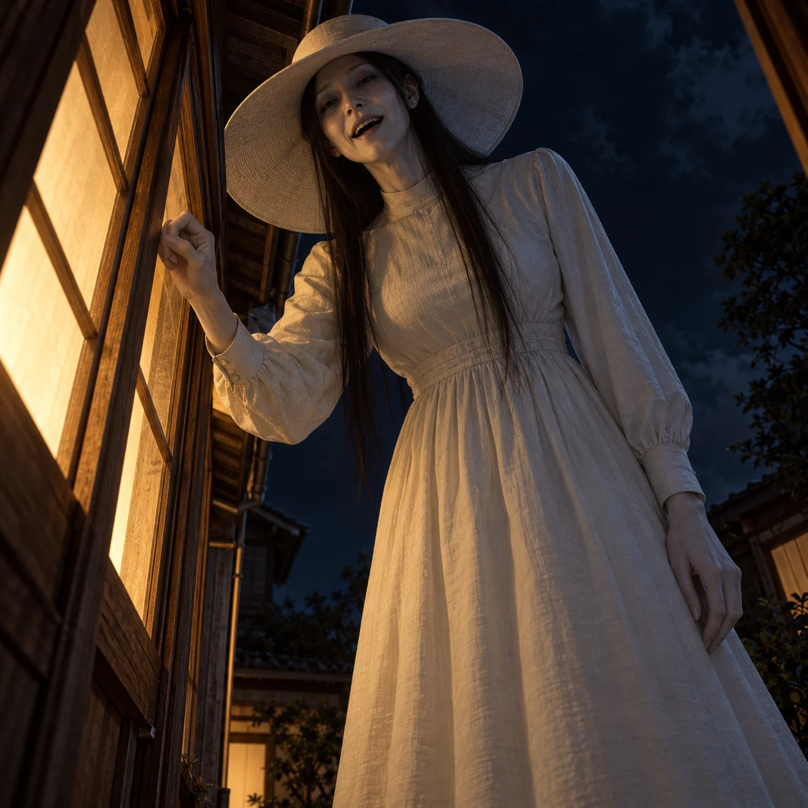
Hasshaku-sama legenda urban modern: perempuan pucat sekitar240cm, gaun terusan dan topi; adegan mengetuk serta meniru suara c06.
Aura: She lures with an imitated familiar voice and knocks at doors or windows; show the actual knocking gesture and disturbing speaking expression only. No written po-po-po, visible sound glyphs, eye glow, magical smoke or violent victim scene. [hasshaku-sama-c05, hasshaku-sama-c06]
Audit ciri dan sumber
- [object Object]
- [object Object]
- [object Object]
Satu perempuan pucat jangkung dengan topi serta gaun terusan buram, dua tangan manusia anatomis; mengetuk bingkai jendela dengan mulut terbuka aneh sesuai c06. Kamera rendah dan rumah domestik menegaskan tinggi. Native+200 sosok dominan, tidak ada desain franchise, efek ajaib, korban atau teks.
Review sumberONE original square premium painterly cinematic Mythics illustration of Hasshaku-sama, the modern Japanese urban-legend ghost woman, an original restrained horror illustration, no game or film likeness.
ANATOMY: One pale woman approximately 240 centimetres tall, indeterminate adult age rendered as an older woman with an ordinary human face. One head, two arms, two legs, ordinary human hands with exactly five fingers each. Wearing one plain broad-brim hat and a fully opaque, loose, ankle-length one-piece dress with high closed neckline and long sleeves. No cleavage, no tight fitting costume, no monstrous mouth or claws. [hasshaku-sama-c01, hasshaku-sama-c03, hasshaku-sama-c04, hasshaku-sama-c11]
MOMENT: leaning slightly down toward a modest house window, knocking with one curled human hand on the wooden window frame while the other hangs naturally; mouth slightly open in an eerie human-mechanical laugh as if imitating an acquaintance, gaze directed down toward viewer.
POWER: She lures with an imitated familiar voice and knocks at doors or windows; show the actual knocking gesture and disturbing speaking expression only. No written po-po-po, visible sound glyphs, eye glow, magical smoke or violent victim scene. [hasshaku-sama-c05, hasshaku-sama-c06]
SCALE & CAMERA: extreme low angle; low exterior angle looking up past ordinary doorframe, full upper figure and hat dominant, hem and scale relative door readable; subject fills the image, distinguishing anatomy readable at 200 pixels.
LIGHT & WEATHER: one warm amber light spilling from the low window against deep indigo night shadows, broad hat shadow and pale face still readable; no neon glow.
SURFACE: weathered uninscribed wood, tactile opaque woven off-white dress and plain off-white hat, naturally pale matte skin.
SETTING: Outside a plain domestic wooden house in Japan at night, a normal approximately two-metre door and low window provide honest scale for a 2.4-metre figure. No signs, talismans, Jizo, inscriptions or franchise mansion. Empty scene with no child or victim. [hasshaku-sama-c01, hasshaku-sama-c06]
MOOD: actively invasive and intimidating, quiet predatory looming, no seductive pose or smiling friendly expression.
HARD CONSTRAINTS: one square image, native resolution at least 1024x1024; no text, glyphs, runes, inscriptions, symbols, lettering, logo, border, frame or watermark; all architecture and objects plain and uninscribed; no extra heads, limbs or fingers; no borrowed film, game, anime or comic design; no nudity or explicit gore; fully opaque clothing; no generic glowing aura, neon outline, energy ribbons or floating symbols.
Hoop snake
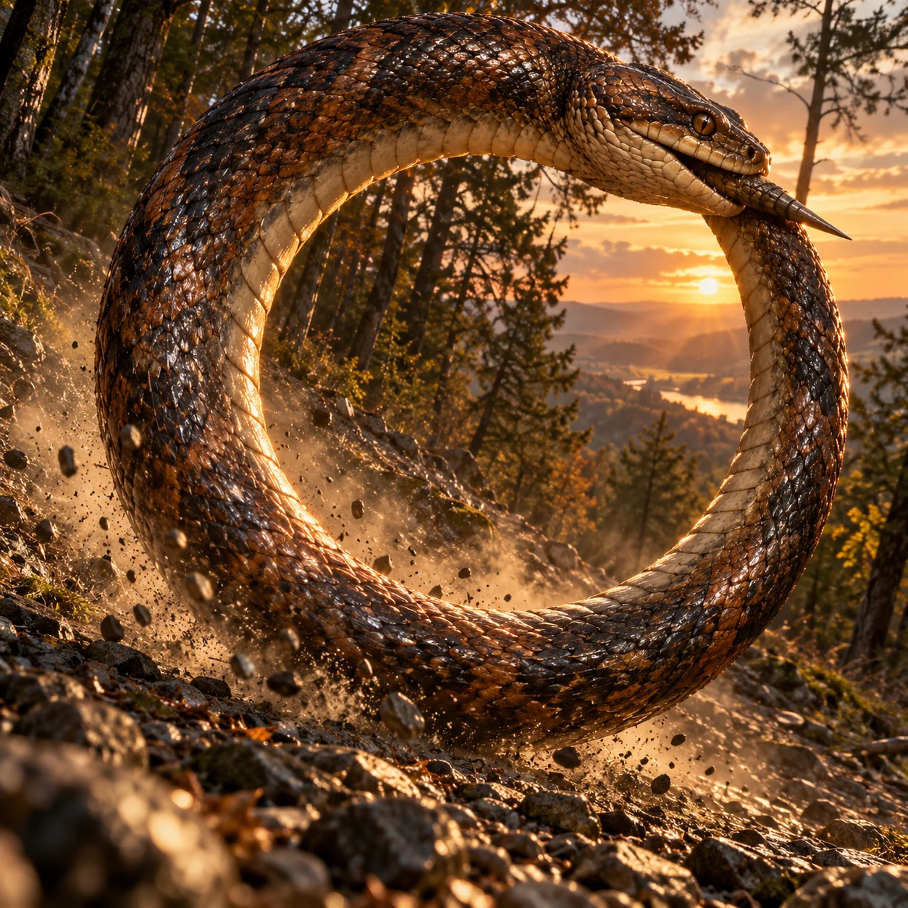
Legenda lokal Hoop Snake Hill c07/c08: ular raksasa berguling menuruni bukit dengan ekor di rahang, duri ekor; bukan versi Australia berduri di sisi dalam.
Aura: Tail-gripping wheel-like pursuit down a hill is the visible action; the spiked tail remains held in the mouth in this moment before it straightens to strike. No victim, no venom beam, no tree magically dying in a scene where it is not jabbed. [hoop-snake-c02, hoop-snake-c07, hoop-snake-c08]
Audit ciri dan sumber
- [object Object]
- [object Object]
- [object Object]
Satu ular kontinu membentuk simpai tegak berguling menuruni bukit; rahang memegang ekor sendiri di kanan atas, duri terminal jelas, lubang tengah kosong dan kontak tanah/debu terbaca native+200. Tanpa kepala kedua atau duri dalam versi Australia; tidak menampilkan serangan tanpa membuka simpai.
Review sumberONE original square premium painterly cinematic Mythics illustration of Hoop snake, the North American enormous rolling snake of the Hoop Snake Hill local legend, a living animal in a landscape, not an emblem.
ANATOMY: ONE continuous limbless scaly snake with ONE head and ONE tapering tail. Its body makes ONE complete upright circular HOOP, leaving a large empty hole in the middle. At the upper-right of the hoop its mouth clearly GRIPS ITS OWN narrow tail near the tail tip; tail is visibly between the closed jaws, with a small terminal hard SPIKE protruding just past the bite. One snake, two ordinary snake eyes; no limbs, wings, horns or second head. NO long spines on the inner hoop: do not mix the Australian variant. [hoop-snake-c02, hoop-snake-c07, hoop-snake-c08]
MOMENT: rolling rapidly downhill toward the low camera like an actual upright wheel; body lower arc contacts stony ground and kicks physical gravel and dust, while the head still grips the tail at top-right. Make the complete hoop and mouth-to-tail join unmistakable, not a normal coiled snake.
POWER: Tail-gripping wheel-like pursuit down a hill is the visible action; the spiked tail remains held in the mouth in this moment before it straightens to strike. No victim, no venom beam, no tree magically dying in a scene where it is not jabbed. [hoop-snake-c02, hoop-snake-c07, hoop-snake-c08]
SCALE & CAMERA: extreme low angle; near-ground view at three-quarter frontal angle, ring plane almost faces camera so central hole and upper bite joint remain clearly visible, entire hoop within frame; subject fills the image, distinguishing anatomy readable at 200 pixels.
LIGHT & WEATHER: low amber dying-sun shaft through dark trees, dramatic black-brown shade and crisp rim light across scales, physically lit dust.
SURFACE: wet rugged dark brown and copper snake scales, realistic scaly belly plates around inside of the ring; hard ordinary terminal tail spine.
SETTING: Steep rough North American wooded hill slope, uninscribed trees and rocks; descending rolling motion toward viewer, no historical marker sign or text. [hoop-snake-c01, hoop-snake-c07]
MOOD: dangerous active pursuit, formidable enormous living snake, no decorative ouroboros symbol.
HARD CONSTRAINTS: one square image, native resolution at least 1024x1024; no text, glyphs, runes, inscriptions, symbols, lettering, logo, border, frame or watermark; all architecture and objects plain and uninscribed; no extra heads, limbs or fingers; no borrowed film, game, anime or comic design; no nudity or explicit gore; fully opaque clothing; no generic glowing aura, neon outline, energy ribbons or floating symbols.